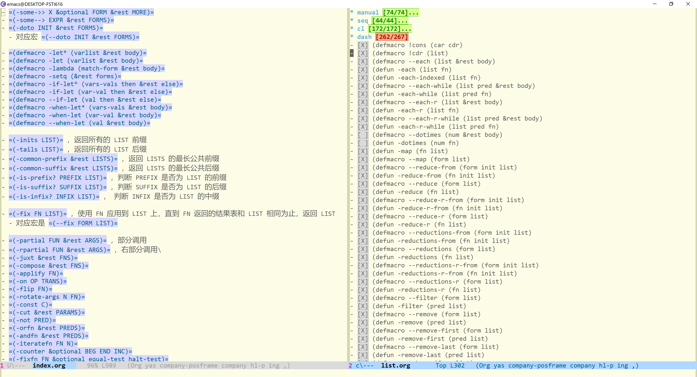

emacs 中的 list 函数 
Table of Contents
本文是对于 elisp manual 上关于 list 操作函数的一份整理。除了 elisp 自带的那些函数，本文还会介绍 cl-seq.el，seq.el 和 dash.el 中的 list 函数。
虽说本文的目的是记录 list 函数的用法，但这也并不意味着本文就是函数原型和函数示例的简单堆砌。我会根据使用经验和他人的分类方法来对这几百个函数做一个简单的分类，这样勉强算是建立了一个查找表，之后写代码时可做参考而不至于重新发明轮子。
完整地读完本文对你来说没什么意义，毕竟要了解函数的功能最好是把它们都敲一遍。感兴趣的话随便挑几个分类，看几个函数就行了，在你寻找想要的函数时希望本文能对你有所帮助。
我使用的是 emacs 27.1 on windows，以下代码均可在该环境中正常执行。其他的环境信息为：
- seq.el ;; Version: 2.21
- dash.el ;; Version: 2.19.0
- cl-lib ;; Version: 1.0
1 一些相关的知识
这一小节中我会介绍一些准备知识和一些约定，以便我在正式开始介绍函数时可以少打点字。如果你对具体的函数不感兴趣，那么读完这一节后就可以停下了，希望本小节对你有所帮助。
1.1 副作用
如果你学过一点编程的话，对副作用（side effect）这个词应该不会太陌生。本文中出现的函数大多数都是无副作用的，所以如果我在介绍函数时没有提到副作用，那就默认该函数是无副作用的。下面我就副作用这个词参考维基百科1做一点简单的介绍，如果你不清楚的话（应该不会）可以看看。
在计算机科学中，如果某个操作，函数或表达式被称作是“带副作用的”，那就意味着它会修改某些在它作用范围外的状态变量。举例来说的话，以下操作都是带副作用的：修改非局部变量，修改静态局部变量，修改引用参数，输入输出操作。
副作用的使用程度依赖于所使用的编程范式。命令式编程通常用于产生副作用来更新系统状态。与之相对的，声明式编程用来报告系统状态，没有副作用。在函数式编程中一般很少使用副作用，这样使得对程序的形式化验证更加容易。
1.2 比较函数 eq，eql 和 equal
一般来说， eq 和 equal 用的比较频繁，前者用来比较对象是否为同一对象（identity），后者用来比较对象的值是否相同（equality），那么 eql 和它们的区别是什么呢？
若两个值是 eq 关系，那么它们就是 eql 的关系，若两个数字无法互相区分，那么它们也是 eql 的，对于浮点数，无法区分指它们具有相同的符号，指数项和精度。
文档中对它的描述如下：
Return t if the two args are ‘eq’ or are indistinguishable numbers. Floating-point values with the same sign, exponent and fraction are ‘eql’. This differs from numeric comparison: (eql 0.0 -0.0) returns nil and (eql 0.0e+NaN 0.0e+NaN) returns t, whereas ‘=’ does the opposite.
1.3 浅拷贝与深拷贝
浅拷贝（shallow copy）和深拷贝（deep copy）这两个词我在很早之前就遇到过，意思我也大概理解，但是要说清楚还真不会说。这里我们来理一理它们的意思和关系。
首先，拷贝（copy）的意思是“将某事物通过某种方式制作成相同的一份或多份的行为”，这个定义可能和计算机里的拷贝有些差别，不过我们关注的点在这句话中都有体现，即“某事物”，“某种方式” 和 “一份或多份”。维基百科的“对象拷贝”词条2将对象拷贝定义为 creating a copy of existing object 。
拷贝的目的一般是获取一个可以修改或移动的副本，或是保留当前值。如果不需要对原对象进行这些操作的话，直接使用原对象的引用（可理解为指针）会更有效率。比如我现在有一张表 (setq a '(1 2 3)) ，我想在其他地方使用它且不需要对其进行修改，那我可以直接 (setq b a) ，这样变量 b 就存储了指向表 (1 2 3) 的指针（或者说是引用），只是复制了表的指针值。
浅拷贝相比于获得引用要更进一步，在拷贝过程中，原对象的成员值会被拷贝到新对象的成员中，但仅仅是拷贝值而已。这也被称为 field-by-field copy 。如果成员值是某一基础类型的话，它会被拷贝到新对象的成员中，这样原对象和新对象各有一份值；如果成员值是某一对象的引用，那么新对象成员得到的也是这个引用，因此原对象和新对象共享该引用指向的对象。在后一种情况下，如果引用对象被修改了，那么在原对象和新对象中都可以看到修改。浅拷贝的实现开销很小，因为它只需要拷贝值就行了。
深拷贝比浅拷贝又要更进一步，浅拷贝中对于引用的处理是直接复制，而深拷贝会创建引用对应对象的拷贝，并将这份拷贝的引用放入新对象的成员中。新对象与原对象不共享对象，它们是两个完全不同的对象。由于需要拷贝对象而不是直接复制引用，它的开销比浅拷贝大。同时，深拷贝过程可能是递归的，在原对象成员中的对象可能还包含其他对象的引用，这就需要对它再进行深拷贝。
但是很多时候拷贝并不能直接区分为浅拷贝和深拷贝，而可能是两者的结合。在拷贝过程中，某些值只是简单的与原对象共享，而某些引用会被深拷贝得到全新的对象。举例来说的话， copy-sequence 进行的就是浅拷贝，它只是简单复制了表中的元素，而不管表中的元素是引用还是基础类型值。与之相比， copy-tree 要“深”一点，它会递归拷贝表中的表。两者的区别可以通过以下代码体现出来：
(setq a '(1 (2) 3)) (setq b (copy-sequence a)) (setq c (copy-tree a)) (setcar (cadr a) 3) (list a b c) => ((1 (3) 3) (1 (3) 3) (1 (2) 3))
可以看到，使用浅拷贝得到的 b 与 a 共享原表的第二元素 (2) ，而使用深拷贝得到的 c 是完全独立于 a 和 b 的对象。但以上的代码并不能说明 copy-tree 进行的是深拷贝，实际上它只能识别表和向量的结构并进行深拷贝，它对于其他类型的值只能进行浅拷贝，所以它进行的也不是严格意义上的深拷贝。
综上，关于拷贝我可以分为四种类型，
- 最简单的一种就是得到引用或指针，这种情况就是拷贝与原对象完全等同（identity）
- 其次就是浅拷贝，两个对象共享所有的引用（新对象和原对象是相等的（equality），但是内部某些引用是完全等同的（identity）
- 再就是混合拷贝（mix copy），其中即存在深拷贝也存在浅拷贝，比如可能是“原对象的引用指向的对象的某些引用和新对象中的对象中的引用是完全等同的（identity）”的情况（有点绕）
- 最后就是深拷贝了，得到的新对象和原对象是相等的（equality），但是它们不共享任何的对象
关于浅拷贝和深拷贝的讨论，stackoverflow 上有这样一个帖子3，感兴趣的同学可以去看看，顺便和我上面给出的维基链接做个对比阅读。里面的一些理解和说明可能和我这里不太一致，至于孰对孰错就凭你自己的判断了。
下文中出现的“副本”这个词如果不做特别说明的话都是指浅拷贝。
知道也好不知道也好，那种事情无关紧要啦 – 卧烟远江
1.4 plist 和 alist
alist 就是 association list，即关联表，它记录了从键到值的映射关系。它的每个元素都是一个 cons cell，car 部分是键（key），cdr 部分是关联值（associated value）
plist 就是 property list，即属性表，它的形式是 (p1 v1 p2 v2 ...) ，每个属性对应一个值。
下文中出现的 alist 和 plist 就是指这两种表。
1.5 cl 风格的函数定义
在 elisp 中，使用 defun 时可以使用 &optional 和 &rest 来指定可选参数和剩余参数。但是在 COMMON LISP 中还可以指定 &key 和 &aux 参数。我在下面会介绍一些 cl-lib 中的函数，所以需要对这两种参数指定方式和 cl-defun 做个介绍。
cl-defun 可以接受的参数形式可以是以下几种的组合：
- VAR …
- &optional (VAR INITFORM SVAR)…
- &rest VAR
- &key ((KEYWORD VAR) INITFORM SVAR)…
- &aux (VAR INITFORM)…
其中 VAR 和普通的 defun 一样，就是参数名。我们管它叫固定参数。
至于可选参数（使用 &optional 的参数），它的形式是 (VAR INITFORM SVAR) ，其中 VAR 是参数名，INITFORM 是 VAR 的默认值，如果没有的话那么 VAR 的默认值就是 nil。当在 VAR 之前的参数都被求值后， INITFORM 就会被求值，来得到 VAR 的值。SVAR 是一个提示变量，如果调用函数时在参数表中指定了 VAR，那么 SVAR 的值就是 t，否则就是 nil。如果不使用 SVAR 的话，你就无从知道调用函数时是否指定了该可选参数，不知道该参数是否使用的是默认值。
下面的函数定义可以说明各种形式的可选参数：
(cl-defun opt-yy (x &optional (b (+ x 1)) (c 1 c-use) (d (* x 2)) a) (if a (+ x b c d a) (cons c-use (+ x b c d)))) (opt-yy 2) => (nil . 10) (opt-yy 2 1) => (nil . 8) (opt-yy 2 1 0) => (t . 7) (opt-yy 2 1 0 1) => (t . 4) (opt-yy 2 1 0 1 1) => 5
对于剩余参数（使用 &rest 的参数），如果使用多个参数进行函数调用，在填满了固定参数和可选参数后，剩下的参数会被放到一张表中，并将表绑定到剩余参数上，就像这样：
(cl-defun rest-yy (x &optional y z &rest c) c) (rest-yy 1) => nil (rest-yy 1 2 3) => nil (rest-yy 1 2 3 4 5) => (4 5)
使用 &key 的参数被称为关键字参数（keyword arguments）。它们也是可选参数，但与 &optional 不同的是，它们使用关键字来对参数进行指定，就像这样：
(cl-defun key1-yy (x &key a) a) (key1-yy 1) => nil (key1-yy 1 :a 'b) => b
关键字参数的指定形式是 ((KEYWORD VAR) INITFORM SVAR) ，其中 (KEYWORD VAR) 可以指定变量 VAR 对应的关键字，关键字在调用函数时使用，变量在函数体内使用，指定的关键字可以不是关键字符号（也就是不带 ':' 前缀的符号），不过这样的话在使用该关键字时需要加上 quote。INITFORM 和 SVAR 的规则和 &optional 一致。
在调用函数时，如果指定了定义时未说明的关键字会引发错误。这个错误可以通过两种方法忽略。一是在关键字参数定义的后面加上 &allow-other-keys ，二是在调用函数时指定 :allow-other-keys 关键字为非空值。
在 CL-LIB 的文档中给出的例子是：
(cl-defun find-thing (thing &rest rest &key need &allow-other-keys) (or (apply 'cl-member thing thing-list :allow-other-keys t rest) (if need (error "Thing not found"))))
在调用 cl-member 时将 :allow-other-keys 设为 t，这样就可以使用 cl-member 中的关键字了。
辅助参数（auxiliary variables）并不是真正的参数，它们就是函数的局部变量罢了。它的形式是 (VAR INITFORM) 。
以下例子中的两个函数功能是一样的：
(cl-defun foo (a b &aux (c (+ a b)) d) BODY) (cl-defun foo (a b) (let ((c (+ a b)) d) BODY))
以上差不多就是 cl-defun 中参数表的全部内容。下面我就几种典型的关键字进行介绍
- :test 和 :test-not ，:test 用来指定函数使用的比较函数，该函数返回非空值说明比较的两值相等；:test-not 指明是否对 :test 函数结果取反
- :key ，用来指定对某一元素的提取操作，该函数的返回值会作为原本元素的值被使用
- :start 和 :end，指定表实际使用的部分，:start 是实际表头，:end 是实际表尾
- :from-end ，从表尾到表头，而不是默认的从表头到表尾
- :count，进行某操作的次数。:from-end 一般需要配合 :count 使用，表示移除从后向前的最多个数的元素
- 例子：
(cl-remove 1 '(1 2 3 1 1) :from-end t :count 1) => (1 2 3 1)，下文中的这两个关键字参数大多是这种用法
- 例子：
1.6 dash 库
根据项目页面4 的介绍，这是一个现代的 elisp list API。这个库的函数是相当奇特的，基本所有公共 API 都是以 - 开头。按照 emacs 中的命名约定，公共函数和变量的名字应该是包名加 - 再加上原来的名字，私有名字应该是包名加上 -- 再加上原本名字。如果按照这个规则的话， dash.el 中的公开函数应该是 --name 的形式。不过这都无所谓就是了。
我一开始以为库的名字来源是连接符 - ，但是看到了 README 上的那张 rainbow-dash 的图后才明白库名的出处，真是一语双关啊（笑）。
目前（2021 年 9 月）dash 库的版本是 2.19.1，下面都以这个版本为准。
关于这个库的大部分内容我会在下面的函数介绍中进行说明，这里就仅仅提一下这个库的特点：
- 某些函数有对应的宏版本（anaphoric macro），宏的名字和函数一样，不过有两个
- - 除了多数通用的 list 函数，这个库里面有许多杂技，比如 threading macro，也就是箭头宏
- 除了 list 外，这个库还提供了许多好用的绑定结构（binding construct）
2 表的构建与修改
(cons CAR CDR)，创建并返回一个新的 cons(list &rest OBJECTS)，创建并返回以参数作为元素的表- 参数数量任意，若为 0 则返回 nil
(make-list LENGTH INIT)，创建并返回一个长度为 LENGTH，元素全为 INIT 的表(append &rest SEQUENCES)，将所有的参数连接起来成一个表并返回，表中的元素由所有参数中的元素组成- 除最后一个参数外，其他参数会被浅拷贝得到新表。最后一个参数直接成为新表的尾部
(nconc &rest LISTS)，将所有 LIST 连接在一起并返回- 与 append 不同的是，它直接 修改 每个 LIST 的尾部来进行连接。最后的参数作为返回表表尾
(number-sequence FROM &optional TO INC)，返回从 FROM 到 TO 的数字序列 list（包括 FROM 和 TO）。INC 是步长，默认值为 1- 如果 TO 为 FROM 或 nil，那么返回的就是 (FROM)。如果 INC 为正但 TO 小于 FROM，或者 INC 为负但是 TO 大于 FROM 的话，函数会返回 nil。如果 INC 为 ZERO 且 TO 不为 nil 或 FROM，那么函数会引发错误（signal an error）。如果 FROM 与 TO 的差值不能被 INC 整除，那么 TO 不在结果表中
- FROM，TO，INC 也可以是浮点数，但由于浮点运算的不精确性可能会得到意想不到的结果
(setcar CELL NEWCAR)，将 CELL 的 CAR 修改为 NEWCAR，并返回 NEWCAR(setcdr CELL NEWCDR)，将 CELL 的 CDR 修改为 NEWCDR，并返回 NEWCDR
seq.el
(seq-concatenate TYPE SEQUENCE ...)，将 SEQUENCES 连接起来成为一个序列并返回，该序列的类型为 TYPE- 和 append 类似
- TYPE 可以是 'vector，'string 或 'list
(seq-into-sequence SEQUENCE)，将 SEQUENCE 转换成一种类型的序列- 在 seq.el 中的默认实现是直接返回 SEQUENCE，这个函数可被用户扩展
(seq-into SEQUENCE TYPE)，将 SEQUENCE 转换成类型为 TYPE 的序列并返回得到的新序列- 若 SEQUENCE 的类型为 TYPE，则直接返回 SEQUENCE
- TYPE 可以是 'vector，'string 或 'list
cl-lib
(cl-list* ARG...)，创建并返回以 ARG… 作为元素的表，并将最后一个参数与得到的表 cons 起来- (cl-list* A B C D) 等价于 (nconc (list A B C) D) 或 (cons A (cons B (cons C D)))
(cl-concatenate TYPE SEQUENCE...)，将 SEQUENCES 连接成类型为 TYPE 的序列- 和 append 类似
- TYPE 可以是 'vector，'string 或 'list
(cl-revappend X Y)，等价于(append (reverse X) Y)(cl-nreconc X Y)，等价于(nconc (nreverse X) Y)
dash
(-concat &rest LISTS)，创建并返回以 LISTS 中各表元素为元素的新表- 内部使用 append 实现，和 append 功能相同
(-cons* &rest ARGS)，创建并返回以 ARGS 作为元素的表，最后两个参数构成表的最后一个 cons- 若最后一个参数不是 list，得的结果就不是 proper list
- 类似于 cl-list*
(-snoc LIST ELEM &rest ELEMENTS)，将 ELEM 添加到 LIST 的尾部并返回新表- 如果 ELEMENTS 不为 nil，也将它们添加到 LIST 的尾部
- 等价于
(-concat LIST (list elem) elements)
(-list ARG)，若 ARG 为 list，直接返回它，否则创建并返回以 ARG 为元素的表(-repeat N X)，创建并返回长度为 N ，元素全为 X 的表- 若 N 小于 1 则返回 nil
- 类似于 make-list
(-cons-to-list CON)，将 cons pair 转化为以其 car 和 cdr 作为元素的表(-value-to-list VAL)，将 VAL 变成表并返回- 对于非 cons pair 的 VAL，仅仅是调用 list，若是 cons pair 则使用 -cons-to-list
(-iota COUNT &optional START STEP)，创建并返回长度为 COUNT 的表，表首元素是 START，每次增加 STEP- START 默认值为 0，步长默认值为 1
3 一些和表有关的谓词
(consp OBJECT)，若 OBJECT 是 cons 则返回 t(atom OBJECT)，若 OBJECT 不是 cons 则返回 t(listp OBJECT)，若 OBJECT 是 list 则返回 t- list 就是 cons 或 nil
(nlistp OBJECT)，若 OBJECT 不是 list 则返回 t(sequencep OBJECT)，若 OBJECT 是序列则返回 t- 序列是 list 或 array
(null OBJECT)，若 OBJECT 为 nil 则返回 t(proper-list-p OBJECT)，若 OBJECT 是 proper list 则返回表的长度，否则返回 nil- 所谓 proper list 是指表的最后一个 cons cell 的 cdr 部分是 nil 且不成环的表
seq.el
(seqp OBJECT)，若 OBJECT 是序列则返回非空值(seq-empty-p SEQUENCE)，若 SEQUENCE 为非空序列则返回非空值，否则返回 nil
cl-lib
(cl-tailp SUBLIST LIST)，若 SUBLIST 是 LIST 的尾巴则返回 t- LIST 不一定是 proper list，尾部可以是其他值，若 SUBLIST 是数字的话会使用 equal 和 LIST 尾部 进行比较，否则使用 eq
(setq a '(1 2 3)) (cl-tailp (cdr a) a) => t (cl-tailp '(3) a) => nil (cl-tailp nil a) => t ;; use dotted list (setq b '(1 2 3 . 4)) (cl-tailp 4 b) => t (setq c '(1 2 3 . a)) (cl-tailp 'a c) => t
(cl-endp X)，判断 X 是否为表的结尾。若 X 为 nil 则返回 t，若为 cons 则返回 nil- 对于非 list 的 X ，函数会引发错误
(cl-tree-equal TREE1 TREE2 [K V]...)，若 TREE1 和 TREE2 有相同结构和相同叶子则返回 t- 叶子比较函数默认是 eql
- 关键字参数有
:test:test-not:key
dash
(-cons-pair? OBJ)，若 OBJ 是 cons pair 则返回真值。- 要求 OBJ 是 cons 且 cdr 不能是表
4 常见的表操作
这一部分中的函数我太清楚到底分到哪一类，干脆直接叫做常用函数吧。
(pop PLACE)，返回 PLACE 指向表的首个元素，并使 PLACE 指向表的下个 cons- 如果 PLACE 为 nil 的话，pop 会返回 nil，且不改变 PLACE 的值
(push NEWELT PLACE)，将 NEWELT cons 到 PLACE 指向的表的表头，并使 PLACE 指向得到的新表- 等价于
(setf PLACE (cons NEWELT PLACE))，但是它保证 PLACE 只被求值一次
- 等价于
(add-to-list LIST-VAR ELEMENT &optional APPEND COMARE-FN)，若 ELEMENT 不在变量 LIST-VAR 指向的表中就将它加入，返回得到的新表- 默认使用 equal 来进行比较，可以通过 COMPARE-FN 指定比较函数
- ELEMENT 在添加时默认放在表头，如果 APPEND 为非空则添加到表尾
- LIST-VAR 不应该是 lexical variable。文档中建议对配置变量（configuration variable）使用该函数，比如
load-path。在其他时候最好使用push或cl-pushnew
(add-to-ordered-list LIST-VAR ELEMENT &optional ORDER)，若 ELEMENT 不在表中则加入它，并返回得到的新表。与 add-to-list 类似- 使用 eq 作为比较函数
- 与 add-to-list 不同的是，在调用后表中的元素顺序会被重排以保持被 ORDER 指定的顺序。在调用函数时如果没有指定顺序，那么 ELEMENT 会被放到表的末尾。如果 ORDER 是一个数字的话（整数浮点均可），函数会把这个位置分配给该值。如果 ORDER 是 nil 或者被忽略的话，ELEMENT 的顺序不会被改变。如果 ORDER 是其他任意值的话（比如非空符号），ELEMENT 的顺序会被删除。
- 列表的顺序信息存储在符号 LIST-VAR 的 plist 中，它的属性名是
list-order。LIST-VAR 不应该是 lexical variable
(length SEQUENCE)，返回 SEQUENCE 的长度(safe-length LIST)，返回 LIST 的长度，但是会避免错误或死循环- 如果 LIST 不是 list 则返回 0，如果 LIST 是环结构，它会返回不小于 LIST 中元素个数的值
(copy-sequence ARG)，返回 list，vector，string，char-table 或 record 的浅拷贝- 若 ARG 是空序列，该函数会返回相同类型的空对象
(copy-tree TREE &optional VECP)，对 TREE 进行深拷贝并返回拷贝树- 如果 VECP 为非空的话，它也会对向量进行深拷贝
(flatten-tree TREE)，“压扁” TREE 并返回，返回的新表中包含 TREE 中所有非空叶子节点值的表- 保持叶子在原树中的顺序，顺序指深度优先遍历的顺序
(reverse SEQ)，返回 SEQ 浅拷贝的反转序列(nreverse SEQ)，返回 SEQ 的反转序列- 直接 修改 原序列并返回修改后的序列
(sort SEQ PREDICATE)，对 SEQ 进行稳定排序并返回排序后序列，使用 PREDICATE 作为比较函数，- SEQ 应该是 list 或 vector 类型。排序过程中会被 修改
seq.el
(seq-length SEQUENCE)，返回 SEQUENCE 的元素个数(seq-copy SEQUENCE)，返回 SEQUENCE 的浅拷贝(seq-reverse SEQUENCE)，对 SEQUENCE 进行反序操作并返回新表- 返回值与 SEQUENCE 同类型
(seq-sort PRED SEQUENCE)，使用 PRED 作为比较函数对 SEQUENCE 进行排序，返回和 SEQUENCE 同类型的序列- 该函数对 SEQUENCE 的浅拷贝进行排序并返回结果，不会 修改 SEQUENCE
(seq-sort-by FUNCTION PRED SEQUENCE)，使用 PRED 作为比较函数进行排序，SEQUENCE 的元素会经过 FUNCTION 转换成新值来进行排序- FUNCTION 必须是单参函数
- 该函数不会 修改 SEQUENCE，而是对 SEQUENCE 的浅拷贝排序并返回
cl-lib
(cl-pushnew X PLACE [KEYWORD VALUE]...)，若 X 不在 PLACE 指向 list 中则将它加入其中，类似于 push- 默认使用 eql 作为比较函数
- 关键字参数有
:test:test-not:key
(cl-adjoin ITEM LIST [KEYWORD VALUE]...)，若 ITEM 不在 LIST 中就将它插到 LIST 的头部并返回新表，否则直接返回 LIST- 默认使用 eq 作为比较函数
- 关键字参数有
:test:test-not:key
(cl-list-length X)，返回 list X 的长度，若 X 是环则返回 nil(cl-copy-list LIST)，返回 LIST 的浅拷贝(cl-sort SEQ PREDICATE [K V]...)，根据 PREDICATE 对 SEQ 进行排序，- 该函数会 修改 SEQ
- 关键字参数有
:key
(cl-stable-sort SEQ PREDICATE [K V]...)，cl-sort 的稳定排序版本
dash
(!cons CAR CDR)，将 CDR 设为指向 (cons CAR CDR) ，和 push 类似(!cdr LIST)，将 LIST 设为指向 LIST 的 cdr 部分，和 pop 类似(-flatten L)，“压扁” L，和 flatten-tree 类似(-flatten-n NUM LIST)，和 -flatten 类似，但是只处理到 NUM 层的嵌套(-tree-seq BRANCH CHILDREN TREE)，返回树节点构成的新表，包括所有的节点- 对应宏是
(--tree-seq BRANCH CHILDREN TREE) - BRANCH 是分支判断函数，它接受一个参数，若参数为分支则返回非空值
- CHILDREN 为节点提取函数，接受节点作为参数并返回节点值
- 例子：
(-tree-seq 'consp 'identity '((1) (2) ((3 4) (5)))) => (((1) (2) ((3 4) (5))) (1) 1 (2) 2 ((3 4) (5)) (3 4) 3 4 (5) 5)
- 对应宏是
(-clone LIST)，返回 LIST 的深拷贝(-grade-up COMPARATOR LIST)，根据 COMPARATOR 对 LIST 进行排序，返回各元素在排序表中的序号组成的表，序号按元素从小到大的顺序递增- 举例来说，
(-grade-up '< '(1 23 4 56 7 89))得到(0 2 4 1 3 5)
- 举例来说，
(-grade-down COMPARATOR LIST)，和 -grade-up 类似，但是返回表中的序号按元素从大到小递增的顺序(-grade-down '< '(1 23 4 56 7 89))得到(5 3 1 4 2 0)
(-sort COMPARATOR LIST)，对 LIST 使用稳定排序进行排序并返回排序后的表。比较函数为 COMPARATOR- 对应宏为
(--sort FORM LIST) - 该函数不会 修改 LIST，它对 LIST 的浅拷贝进行排序并返回排序结果
- 对应宏为
5 对表中元素的访问
(car LIST)，返回 LIST 的 car ，若 LIST 为 nil 则返回 nil(cdr LIST)，返回 LIST 的 cdr ，若 LIST 为 nil 则返回 nil(car-safe OBJECT)，若 OBJECT 为 list，则功能与 car 相同，否则直接返回 nil(cdr-safe OBJECT)，若 OBJECT 为 list，则功能与 cdr 相同，否则直接返回 nil
car 和 cdr 可以说是 Lisp 中最经典的两个操作符了， car 取得 cons 的前部分， cdr 取得 cons 的后部分。除了这两个最基本的函数，elisp 中还提供了 cx{2, 4}r 共计 28 个扩展函数，其中 x 可以是 a 或 d ，它们的含义如下5：
| (caar x) | (car (car x)) |
| (cadr x) | (car (cdr x)) |
| (cdar x) | (cdr (car x)) |
| (cddr x) | (cdr (cdr x)) |
| (caaar x) | (car (car (car x))) |
| (caadr x) | (car (car (cdr x))) |
| (cadar x) | (car (cdr (car x))) |
| (caddr x) | (car (cdr (cdr x))) |
| (cdaar x) | (cdr (car (car x))) |
| (cdadr x) | (cdr (car (cdr x))) |
| (cddar x) | (cdr (cdr (car x))) |
| (cdddr x) | (cdr (cdr (cdr x))) |
| (caaaar x) | (car (car (car (car x)))) |
| (caaadr x) | (car (car (car (cdr x)))) |
| (caadar x) | (car (car (cdr (car x)))) |
| (caaddr x) | (car (car (cdr (cdr x)))) |
| (cadaar x) | (car (cdr (car (car x)))) |
| (cadadr x) | (car (cdr (car (cdr x)))) |
| (caddar x) | (car (cdr (cdr (car x)))) |
| (cadddr x) | (car (cdr (cdr (cdr x)))) |
| (cdaaar x) | (cdr (car (car (car x)))) |
| (cdaadr x) | (cdr (car (car (cdr x)))) |
| (cdadar x) | (cdr (car (cdr (car x)))) |
| (cdaddr x) | (cdr (car (cdr (cdr x)))) |
| (cddaar x) | (cdr (cdr (car (car x)))) |
| (cddadr x) | (cdr (cdr (car (cdr x)))) |
| (cdddar x) | (cdr (cdr (cdr (car x)))) |
| (cddddr x) | (cdr (cdr (cdr (cdr x)))) |
(nth N LIST)，返回 LIST 的第 N 个元素- N 从 0 开始。如果 N 超出了 LIST 的长度则返回 nil
(elt SEQUENCE N)，返回 SEQUENCE 的第 N 个元素
seq.el
(seq-elt SEQUENCE N)，返回 SEQUENCE 的第 N 个元素(seq-first SEQUENCE)，返回 SEQUENCE 的第一个元素(seq-rest SEQUENCE)，返回除 SEQUENCE 首元素外其余元素的序列- 对于 list 来说就是 cdr
(seq-random-elt SEQUENCE)，随机返回 SEQUENCE 中的一个元素- 若 SEQUENCE 为空序列则引发错误
cl-lib
(cl-first LIST)，返回 LIST 的首元素(cl-second X)，返回 list X 的第二元素(cl-third X)，返回 list X 的第三元素(cl-fourth X)，返回第四元素(cl-fifth X)，返回第五元素(cl-sixth X)，返回第六元素(cl-seventh X)，返回第七元素(cl-eighth X)，返回第八元素(cl-ninth X)，返回第九元素(cl-tenth X)，返回第十元素
dash
(-first-item LIST)，返回 LIST 的第一项，若 LIST 太短则返回 nil(-second-item LIST)，返回 LIST 的第二项，若 LIST 太短则返回 nil(-third-item LIST)，返回 LIST 的第三项，若 LIST 太短则返回 nil(-fourth-item LIST)，返回 LIST 的第四项，若 LIST 太短则返回 nil(-fifth-item LIST)，返回 LIST 的第五项，若 LIST 太短则返回 nil(-last-item LIST)，返回 LIST 的最后一项，若 LIST 为空表则返回 nil
6 获取表的子表
(nthcdr N LIST)，取得 LIST 的第 N 个 cdr 并返回- 相当于调用 N 次 cdr
(last LIST &optional N)，返回列表的最后一个 cons，若 LIST 为空的话则返回 nil- 若 N 为非空，则返回从后向前数的 N 个 cons 组成的 list
- 若 N 大于表长，则返回 LIST
(butlast LIST &optional N)，返回除 LIST 后 N 项的其他项组成的新表- 如果 N 被忽略了，则返回去除尾项得到的新表
(nbutlast LIST &optional N)，直接 修改 LIST 来移除后 N 个元素，并返回修改后的 LIST
seq.el
(seq-subseq SEQUENCE START &optional END)，返回包括从序号 START 到 END（不包括 END）的 SEQUENCE 元素组成的新序列- 如果忽略 END，它的默认值是 SEQUENCE 的长度
- 如果 START 或 END 是负数，那就从后往前数，例子：
(seq-subseq '(1 2 3) -3 -1) => (1 2) - 如果 START 或 END 超出范围则引发错误
(seq-drop SEQUENCE N)，移除 SEQUENCE 的前 N 个元素并返回得到序列- 若 N 小于等于 0 则直接返回 SEQUENCE
- 对于 list 来说就是 nthcdr
(seq-take SEQUENCE N)，返回 SEQUENCE 前 N 个元素组成的新序列- 返回值的类型和 SEQUENCE 一致
- 如果 N 小于等于 0，则返回空序列
(seq-drop-while PRED SEQUENCE)，沿 SEQUENCE 移除满足 PRED 条件的元素，直到遇到不满足 PRED 的元素，随后返回以该元素为首的 SEQUENCE(seq-take-while PRED SEQUENCE)，沿 SEQUENCE 取得满足 PRED 条件的元素，直到遇到不满足 PRED 的元素，随后返回由满足 PRED 的元素组成的新序列
cl-lib
(cl-ldiff LIST SUBLIST)，返回去掉 SUBLIST 尾巴的 LIST 副本- 类似于 seq-take，但是 SUBLIST 需要指向 LIST 中某个 cons
(cl-subseq SEQ START &optional END)，返回从 START 到 END（不包括 END）的 SEQ 元素组成的新序列- 如果 END 被忽略了，它的默认值就是 SEQ 的长度
- 若 START 或 END 是负数，那就从后往前数
- 若 START 或 END 超出了 SEQUENCE 长度则引发错误
- 在内部使用了 seq-subseq
dash
(-take N LIST)，返回 LIST 前 N 项组成的新表(-take-last N LIST)，返回表的最后 N 项组成的新表(-take-while PRED LIST)，沿着表选取满足 PRED 的元素，直到遇到不满足 PRED 的元素，返回由满足元素组成的新表- 对应宏是
(--take-while FORM LIST)
- 对应宏是
(-drop-last N LIST)，返回去掉表最后 N 项后剩余元素组成的新表(-drop-while PRED LIST)，沿着表去掉当前元素，直到遇到不满足 PRED 的元素，并返回表剩余的部分（包括第一个不满足 PRED 的元素）- 对应宏是
(--drop-while FORM LIST) - 例子：
(-drop-while (lambda (x) (< x 5)) '(1 3 5 2)) => (5 2)
- 对应宏是
(-butlast LIST)，返回由除了 LIST 尾项的其他项组成的新表- 直接调用了 butlast
(-slice LIST FROM &option TO STEP)，返回 LIST 从 FROM 到 TO 的项组成的新表- 若 FROM 或 TO 小于零，它们会被取余到正值
- 如果 STEP 为数字，它会作为取子表时的步长，步长默认值为 1
7 表的增加和删除操作
(delq ELT LIST)，从 LIST 中删除与 ELT 相同的所有元素，并返回 修改 后的表- 使用 eq 进行比较
(delete ELT SEQ)，对于表而言和 delq 相似，使用 equal 进行比较- 若 SEQ 不是表，那么该函数不会修改原结构，而是返回一个新的向量或字符串
(remq ELT LIST)，找出 LIST 中等于 ELT 的项，返回由剩余项组成的新表- 使用 eq 进行比较
- 根据实现代码可知，若 LIST 中不存在 ELT 则直接返回 LIST；若 LIST 中等于 ELT 的元素全在表头，则返回不含 ELT 的表的剩余部分，而不是返回复制的表。这一点可由以下代码说明
(setq a '(1 1 2 3)) (setq b (remq 1 a)) => (2 3) (setf (nth 2 a) 3) b => (3 3) (setq c (remq 4 a)) (eq a c) => t
我将这种“若无满足条件元素则返回原表，若满足条件的元素全在表头则直接返回剩余表”的行为称为“remove性质1”，本节中若有函数满足该性质，我会直接写“该函数满足 remove性质1”来标识。
(remove ELT SEQ)，和 remq 类似，使用 equal 进行比较- 对于表参数满足 remove性质1
- 可用于除 list 外的其他类型序列
(delete-dups LIST)，删除表中重复的元素，并返回 修改 后的表- 使用 equal 进行比较，内部实现使用了哈希表
- 如果表中存在多个相同的元素则保留第一个出现的
(delete-consecutive-dups LIST &optional CIRCULAR)，从表中删除连续的重复元素- 如果 CIRCULAR 为非空的话，表首和表尾也被看作是连续的
- 例子：
(delete-consecutive-dups '(1 2 3 4 4 5 5 1) t) => (1 2 3 4 5)
seq.el
(seq-filter PRED SEQUENCE)，从 SEQUENCE 中筛选出符合 PRED 的元素，并返回由这些元素组成的新表(seq-remove PRED SEQUENCE)，从 SEQUENCE 中筛选不符合 PRED 的元素，并返回由这些元素组成的新表
cl-lib
(cl-remove ITEM SEQ [KEYWORD VALUE]...)，找出 SEQ 中等于 ITEM 的项，返回剩余项组成的新序列- 对于表参数满足 remove性质1
- 默认比较函数未在函数文档中说明，根据代码可知为 eql
- 关键字参数有
:test:test-not:key:count:start:end:from-end
(cl-remove-if PREDICATE SEQ [KEYWORD VALUE]...)，找出满足 PREDICATE 的项，并返回剩余项组成的新序列- 对于表参数满足 remove性质1
- 关键字参数有
:key:count:start:end:from-end
(cl-remove-if-not PREDICATE SEQ [KEYWORD VALUE]...)，找出 SEQ 中不满足 PREDICATE 的项，返回剩余项组成的新序列- 对于表参数满足 remove性质1
- 关键字参数有
:key:count:start:end:from-end
(cl-remove-duplicates SEQ [KEYWORD VALUE]...)，移除 SEQ 副本中所有重复元素，并返回该副本- 对于表参数满足 remove性质1，不过只能有单一重复元素
- 与 delete-dups 不同，它默认保留最后出现的重复元素， 如果指定 :from-end 为 t 则保留第一个出现的重复元素。例子：
(cl-remove-duplicates '(1 2 3 1)) => (2 3 1)(cl-remove-duplicates '(1 2 3 2) :from-end t) => (1 2 3) - 关键字参数有
:test:test-not:key:start:end:from-end - 如果使用了 :key ，那么进行比较前元素会被 :key 指定的函数调用，并使用返回值与其他元素比较。例子：
(cl-remove-duplicates '(-2 -2 2) :key 'abs) => (2)
(cl-delete ITEM SEQ [KEYWORD VALUE]...)，和 cl-remove 类似，但是直接 修改 SEQUENCE(cl-delete-if PREDICATE SEQ [KEYWORD VALUE]...)，和 cl-remove-if 类似，但是直接 修改 SEQ(cl-delete-if-not PREDICATE SEQ [KEYWORD VALUE]...)，和 cl-remove-if-not 类似，但是直接 修改 SEQ(cl-delete-duplicates SEQ [KEYWORD VALUE]...)，和 cl-remove-duplicates 类似，不过是直接 修改 SEQ
dash
(-insert-at N X LIST)，返回将 X 插入 LIST 的第 N 位置得到的表- 实现方式为先使用 -split-at 对 LIST 分组，再对分组表 Y 进行：
(nconc (car Y) (cons X (cadr Y)))的操作。这样得到的新表与原表 LIST 共享后半段，也就是共享原表第 N 个元素为表头的表。以下代码可以验证上面说法的正确性
- 实现方式为先使用 -split-at 对 LIST 分组，再对分组表 Y 进行：
(setq a '(1 2 3 4 6)) (setq b (-insert-at 4 5 a)) => (1 2 3 4 5 6) (setf (nth 4 a) 7) b => (1 2 3 4 5 7) (setf (nth 5 b) 8) a => (1 2 3 4 8)
(-interpose SEP LIST)，在 LIST 副本的每个元素之间插入 SEP，并返回副本- 例子：
(-interpose 'o '(s s)) => (s o s)
- 例子：
(-filter PRED LIST)，类似于 cl-remove-if-not，返回由满足 PRED 的元素组成的新表- 对应宏是
(--filter FORM LIST)
- 对应宏是
(-keep FN LIST)，类似于 -filter ，但是新表中的元素是 FN 的返回值，而不是原元素- 对应宏是
(--keep FORM LIST) - 例子：
(-keep (lambda (x) (and (> x 5) (+ x 1))) '(1 2 3 4 5 6 7)) => (7 8)
- 对应宏是
(-remove-at N LIST)，移除 LIST 副本的第 N 个元素，并返回副本(-remove-at-indices INDICES LIST)，移除 INDCIES 中的序号对应的 LIST 副本中元素，并返回副本- 若 INDICES 中存在相同的序号，那就在删除第一个对应元素后删除邻接的下一个元素。-remove-at-indices 中的实现思路很巧妙。例子：
(-remove-at-indices '(0 1 1 3 3) '(1 2 3 4 5 6 7)) => (4 7) - 如果感觉例子不容易理解，可以看看下面 copy 过来的具体实现：
- 若 INDICES 中存在相同的序号，那就在删除第一个对应元素后删除邻接的下一个元素。-remove-at-indices 中的实现思路很巧妙。例子：
(defun -remove-at-indices (indices list) "Return a list whose elements are elements from LIST without elements selected as `(nth i list)` for all i from INDICES. See also: `-remove-at', `-remove'" (declare (pure t) (side-effect-free t)) (let* ((indices (-sort '< indices)) (diffs (cons (car indices) (-map '1- (-zip-with '- (cdr indices) indices)))) r) (--each diffs (let ((split (-split-at it list))) (!cons (car split) r) (setq list (cdr (cadr split))))) (!cons list r) (apply '-concat (nreverse r))))
(-remove PRED LIST)，类似于 cl-remove-if，返回由不满足 PRED 的元素组成的新表- 对应宏是
(--remove FORM LIST)
- 对应宏是
(-remove-first PRED LIST)，返回去掉 LIST 中第一个满足 PRED 的元素并返回表- 满足 remove性质1，且与原表共享被删除元素后面的尾表
- 对应宏是
(--remove-first FORM LIST)
(-remove-last PRED LIST)，去掉 LIST 副本中最后一个满足 PRED 的元素，并返回副本- 对应宏是
(--remove-last FORM LIST)
- 对应宏是
(-non-nil LIST)，返回包含 LIST 中所有非 nil 值元素的新表
8 表的查找操作
(memq ELT LIST)，若 ELT 是 LIST 的中的元素则返回非空值- 若找到了 ELT，返回值是以第一个 ELT 为首元素的 LIST 子表
- 函数使用 eq 进行比较
(memql ELT LIST)，和 memq 相似，使用 eql 来比较(member ELT LIST)，和 memql 相似，使用 equal 进行比较(member-ignore-case ELT LIST)，和 member 类似，主要用于字符串的比较- ELT 必须是字符串，字母的大小写会被忽略
- LIST 中的非字符串元素会被忽略
- 例子：
(member-ignore-case "yy" '("i" "am" "yY" "'s" "dash")) => ("yY" "s" "dash")
seq.el
(seq-contains-p SEQUENCE ELT &optional TESTFN)，若 SEQUENCE 中存在和 ELT 相等的元素则返回非空值- 默认的比较函数是 equal，可在 TESTFN 指定
(seq-some PRED SEQUENCE)，若 SEQUENCE 中存在元素满足 PRED 则返回非空值，否则返回 nil(seq-every-p PRED SEQUENCE)，若 SEQUENCE 中所有元素都满足 PRED 则返回非空值，否则返回 nil(seq-find PRED SEQUENCE &optional DEFAULT)，返回 SEQUENCE 中第一个满足 PRED 的元素，若没有找到则返回 DEFAULT，若 DEFAULT 被忽略了则返回 nil(seq-position SEQUENCE ELT &optional TESTFN)，返回 SEQUENCE 中第一个和 ELT 相同的元素的序号，若未找到则返回 nil。- 默认使用 equal 进行比较，可在 TESTFN 指定
cl-lib
(cl-some PREDICATE SEQ...)，若在 SEQ 中存在满足 PREDICATE 的元素，则返回由 PREDICATE 返回的真值(cl-every PREDICATE SEQ...)，若所有的元素都满足 PREDICATE 则返回 t(cl-notany PREDICATE SEQ...)，若所有的元素都不满足 PREDICATE 则返回 t(cl-notevery PREDICATE SEQ...)，若存在元素不满足 PREDICATE 则返回 t(cl-member ITEM LIST [K V]...)，找到 LIST 中第一个出现的 ITEM，并返回以 ITEM 为首元素的 LIST 的子表- 默认使用 eql 进行比较
- 关键字参数有
:test:test-not:key
(cl-member-if PREDICATE LIST [K V]...)，找到 LIST 中第一个满足 PREDICATE 的项，并返回以其为首元素的 LIST 子表- 关键字参数有
:key
- 关键字参数有
(cl-member-if-not PREDICATE LIST [K V]...)，找到 LIST 中第一个不满足 PREDICATE 的项，并返回以其为首项的 LIST 的子表- 关键字参数有
:key
- 关键字参数有
(cl-find ITEM SEQ [K V]...)，找出在 SEQ 中第一个出现的 ITEM，并返回其值，否则返回 nil- 默认使用 eql 进行比较
- 关键字参数有
:test:test-not:key:start:end:from-end
(cl-find-if PREDICATE SEQ [K V]...)，找到 SEQ 中第一个满足 PREDICATE 的项，并返回其值，否则返回 nil- 关键字参数有
:key:start:end:from-end
- 关键字参数有
(cl-find-if-not PREDICATE SEQ [K V]...)，找到 SEQ 中第一个不满足 PREDICATE 的项，并返回其值，否则返回 nil- 关键字参数有
:key:start:end:from-end
- 关键字参数有
(cl-position ITEM SEQ [K V]...)，找到 SEQ 中第一个出现的 ITEM，并返回该 ITEM 的序号。若未找到则返回 nil- 默认使用 eql 进行比较
- 关键字参数有
:test:test-not:key:start:end:from-end
(cl-position-if PREDICATE SEQ [K V]...)，找到 SEQ 中第一个满足 PREDICATE 的项，返回其序号。若未找到则返回 nil- 关键字参数有
:key:start:end:from-end
- 关键字参数有
(cl-position-if-not PREDICATE SEQ [K V]...)，找到 SEQ 中第一个不满足 PREDICATE 的项，并返回其序号。若未找到则返回 nil- 关键字参数有
:key:start:end:from-end
- 关键字参数有
(cl-mismatch SEQ1 SEQ2 [K V]...)，将 SEQ1 和 SEQ2 进行比较，并返回第一个不等元素的序号。若两者匹配的话就返回 nil。- 默认使用 eql 进行比较
- 若有一序列是另一序列的前半段，那么返回值就是较短序列的长度
- 关键字参数有
:test:test-not:key:start1:end1:start2:end2:from-end
(cl-search SEQ1 SEQ2 [K V]...)，在 SEQ2 中寻找是否存在子列 SEQ1，若找到了则返回最先找到的子列的位置，位置即该子列的首元素在 SEQ2 中的序号。否则返回 nil- 关键字参数有
:test:test-not:key:start1:end1:start2:end2:from-end - 例子：
(cl-search '(1) '(1 2 3)) => 0(cl-search '(1) '(1 2 3 1) :from-end t) => 3
- 关键字参数有
dash
(-contains? LIST ELEMENT)，若 LIST 含有 ELEMENT 则返回非空值- 默认使用 equal 进行比较，可通过变量 -compare-fn 进行指定
(-some PRED LIST)，若 LIST 中存在满足 PRED 的元素，则返回第一个使 (PRED X) 为非空值的值- 对应宏是
(--some FORM LIST)
- 对应宏是
(-every PRED LIST)，若 LIST 中所有元素满足 PRED 则返回非空值，该值为最后一次调用 PRED 的返回值，否则返回 nil- 对应宏是
(--every FORM LIST)
- 对应宏是
(-any? PRED LIST)，若 LIST 中所有元素都满足 PRED 则返回 t- 对应宏是
(--any? FORM LIST)
- 对应宏是
(-all? PRED LIST)，和 -any? 功能一致- 对应宏是
(--all? FORM LIST)
- 对应宏是
(-none? PRED LIST)，若 LIST 所有元素都不满足 PRED 则返回 t，否则返回 nil- 对应宏是
(--none? FORM LIST)
- 对应宏是
(-only-some? PRED LIST)若 LIST 中至少有一项满足 PRED 且至少有一项不满足 PRED 则返回 t，否则返回 nil- 对应宏是
(--only-some? FORM LIST)
- 对应宏是
(-first PRED LIST)，找到 LIST 中第一个满足 PRED 的元素，并返回它的值，若未找到则返回 nil- 对应宏是
(--first FORM LIST)
- 对应宏是
(-last PRED LIST)，找到 LIST 中最后一个满足 PRED 的元素，并返回该元素，否则返回 nil- 对应宏是
(--last FORM LIST)
- 对应宏是
(-elem-index ELEM LIST)，找到 LIST 中第一个等于 ELEM 的项并返回其序号，若未找到则返回 nil- 使用 equal 进行比较
(-elem-indices ELEM LIST)，和 -elem-index 相似，但是会返回一张表，表中是所有等于 ELEM 元素的序号(-find-indices PRED LIST)，找到所有满足 PRED 的项并返回包含它们的序号的表，序号按单调增顺序排列- 对应宏是
(--find-indices FORM LIST)
- 对应宏是
(-find-index PRED LIST)，返回第一个满足 PRED 的元素的序号，若未找到则返回 nil- 对应宏是
(--find-index)
- 对应宏是
(-find-last-index PRED LIST)，返回最后一个满足 PRED 的元素的序号，若未找到则返回 nil- 对应宏是
(--find-last-index FORM LIST)
- 对应宏是
9 表的替换操作
cl-lib
(cl-fill SEQ ITEM [KEYWORD VALUE]...)，使用 ITEM 填充 SEQ，并返回 SEQ- 该函数会对 SEQ 进行 修改
- 关键字参数有
:start:end
(cl-replace SEQ1 SEQ2 [KEYWORD VALUE]...)，使用 SEQ2 中的元素替换 SEQ1 中的元素，SEQ1 会被 修改 并返回- SEQ1 的长度不会改变，若 SEQ1 长度小于 SEQ2 长度则只替换到 SEQ1 结束，例子：
(cl-replace '(1 1 1) '(1 2 3 4)) => (1 2 3) - 关键字参数有
:start1:end1:start2:end2
- SEQ1 的长度不会改变，若 SEQ1 长度小于 SEQ2 长度则只替换到 SEQ1 结束，例子：
(cl-substitute NEW OLD SEQ [KEYWORD VALUE]...)，将 SEQ 副本中的 OLD 值替换为 NEW 值并返回副本- 默认使用 eql 进行比较
- 若 NEW 和 OLD 是 eq 关系则直接返回 SEQ。若 SEQ 中不存在 OLD 则直接返回 SEQ
- 关键字参数有
:test:test-not:key:count:start:end:from-end
(cl-substitute-if NEW PREDICATE SEQ [KEYWORD VALUE]...)，替换 SEQ 副本中满足 PREDICATE 的项为 NEW，并返回副本- 若 NEW 为 nil 则直接返回 SEQ，若 SEQ 中没有满足 PREDICATE 的项则直接返回 SEQ
- 关键字参数有
:key:count:start:end:from-end
(cl-substitute-if-not NEW PREDICATE SEQ [KEYWORD VALUE]...)，替换 SEQ 副本中不满足 PREDICATE 的项为 NEW，并返回副本- 若 NEW 为 nil 则直接返回 SEQ，若 SEQ 中没有不满足 PREDICATE 的项则直接返回 SEQ
- 关键字参数有
:key:count:start:end:from-end
(cl-nsubstitute NEW OLD SEQ [K V]...)，和 cl-substitute 类似，直接 修改 SEQ 并返回(cl-nsubstitute-if NEW PREDICATE SEQ [K V]...)，和 cl-substitute-if 类似，直接 修改 SEQ 并返回(cl-nsubstitute-if-not NEW PREDICATE SEQ [K V]...)，和 cl-substitute-if-not 类似，直接 修改 SEQ 并返回(cl-subst NEW OLD TREE [KEYWORD VALUE]...)，使用 NEW 替换 TREE 副本中的 OLD 值并返回副本- 默认使用 eql 比较
- 关键字参数有
:test:test-not:key
(cl-subst-if NEW PREIDCATE TREE [K V]...)，替换 TREE 副本中满足 PREDICATE 的元素为 NEW，并返回副本- 关键字参数有
:key
- 关键字参数有
(cl-subst-if-not NEW PREDICATE TREE [K V]...)，替换 TREE 副本中不满足 PREDICATE 的元素为 NEW，并返回副本- 关键字参数有
:key
- 关键字参数有
(cl-sublis ALIST TREE [K V]...)，将 TREE 中出现的 ALIST 的 KEYS 替换成对应的 VALUES，并返回替换后的副本- 关键字参数有
:test:test-not:key - cl-subst，cl-subst-if 和 cl-subst-if-not 都使用该函数实现
- 关键字参数有
(cl-nsubst NEW OLD TREE [K V]...)，cl-subst 的副作用版本，对 TREE 进行 修改 并返回(cl-nsubst-if NEW PREDICATE TREE [K V]...)，cl-subst-if 的副作用版本，对 TREE 进行 修改 并返回(cl-nsubst-if-not NEW PREDICATE TREE [K V]...)，cl-subst-if-not 的副作用版本，对 TREE 进行 修改 并返回(cl-nsublis ALIST TREE [K V]...)，cl-sublis 的副作用版本，对 TREE 进行 修改 并返回- cl-nsubst，cl-nsubst 和 cl-nsubst-if-not 都使用该函数实现
dash
(-replace OLD NEW LIST)，替换掉 LIST 副本中的 OLD 为 NEW 并返回副本- 使用 equal 比较
(-replace-first OLD NEW LIST)，替换掉 LIST 副本中第一个出现的 OLD 为 NEW，并返回副本- 使用 equal 比较
(-replace-last OLD NEW LIST)，替换掉 LIST 中最后一个出现的 OLD 为 NEW- 使用 equal 比较
(-replace-at N X LIST)，将 LIST 副本的第 N 个元素替换为 X，并返回副本(-update-at N FUNC LIST)，对 LIST 副本的第 N 个元素调用 FUNC，并用返回值替换该元素，返回副本- 对应宏是
(--update-at N FORM LIST)
- 对应宏是
10 表的集合操作
seq.el
(seq-set-equal-p SEQ1 SEQ2 &optional TESTFN)，若 SEQ1 和 SEQ2 中的元素全部相同则返回非空值- 默认使用 equal 进行比较，可通过 TESTFN 指定
- 两个序列的元素顺序和数量不影响判定
- 例子
(seq-set-equal-p '(1 1 1 2 3) '(3 2 1)) => t
(seq-uniq SEQUENCE &optional TESTFN)，返回除掉 SEQUENCE 中重复元素的新表- 默认使用 equal 进行比较，可通过 TESTFN 指定
- 保留第一个出现的重复元素，例如
(seq-uniq '(1 1 2 3 2 )) => (1 2 3)
(seq-intersection SEQ1 SEQ2 &optional TESTFN)，求交集，返回一个新表，表中的元素在 SEQ1 和 SEQ2 中都有出现- 默认使用 equal 进行比较，可通过 TESTFN 指定
- 不保证结果中元素的唯一性
- 例子
(seq-intersection '(1 1 2 3) '(2 2 33 3 3)) => (2 3)
(seq-difference SEQ1 SEQ2 &optional TESTFN)，求差集，返回一张表，表中的元素只在 SEQ1 中存在，在 SEQ2 中不存在- 默认使用 equal 进行比较，可通过 TESTFN 指定
- 不保证结果中元素的唯一性
- 例子
(seq-difference '(1 1 2 3) '(2 2 33 3 3)) => (1 1)
cl-lib
(cl-subsetp LIST1 LIST2 [K V]...)，若 LIST1 是 LIST2 的子集则返回真值- 关键字参数有
:test:test-not:key
- 关键字参数有
(cl-merge TYPE SEQ1 SEQ2 PREDICATE [K V]...)，将两个序列进行合并，并返回合并结果- 合并得到的序列类型为 TYPE，使用 PREDICATE 来判断合并顺序
- 该函数通过 修改 SEQ1 和 SEQ2 来进行合并，也就是 修改 cons 来重排
- 该函数主要用于两个有序序列的合并，所谓有序是指针对 PREDICATE 而言的有序
- 关键字参数有
:key - 例子：
(cl-merge 'list '(1 3 5) '(2 4 6) '<) => (1 2 3 4 5 6)
(cl-union LIST1 LIST2 [K V]...)，对 LIST1 和 LIST2 进行求并集操作，并返回求并结果- 若 LIST1 或 LIST2 中有一值为 nil 则返回另一值
- 若没有指定关键字参数且两表是 equal 关系则返回 LIST1
- 默认比较函数为 eq，对 number 则默认使用 eql
- 该函数的实现方式是以较长的表作为基础，将它没有但较短的表中有的项 push 到它的前面，最后返回添加完成的表，这个例子可以说明这一点：
(cl-union '(1 2 3) '(4 5)) => (5 4 1 2 3) - 关键字参数有
:test:test-not:key
(cl-nunion LIST1 LIST2 [K V]...)，cl-union 的副作用版本- 话虽这么说，cl-seq 里面的实现其实就是调用 cl-union
(cl-intersection LIST1 LIST2 [K V]...)，对两者求交集，返回包含交集结果的新表- 若 LIST1 或 LIST2 中有一为 nil 则返回 nil，若两者是 equal 关系则返回 LIST1
- 默认比较函数是 eq，比较数字用 eql
- 关键字参数有
:test:test-not:key
(cl-nintersection LIST1 LIST2 [K V]...)，cl-intersection 的副作用版本- 也只是调用了 cl-intersection 而已
(cl-set-difference LIST1 LIST2 [K V]...)，对两者求差集，返回只包含 LIST1 中元素而没有 LIST2 中元素的新表- 若 LIST1 或 LIST2 为 nil 则返回 LIST1
- 关键字参数有
:test:test-not:key
(cl-nset-difference LIST1 LIST2 [K V]...)，cl-set-difference 的副作用版本- 仅仅调用了 cl-set-difference 而已
(cl-set-exclusive-or LIST1 LIST2 [K V]...)，对两者进行异或操作，即返回包含仅在 LIST1 或 LIST2 中出现的 ITEM 的新表- 若其中一表为 nil 则返回另一表，若两表是 equal 关系则返回 nil
- 关键字参数有
:test:test-not:key - 使用了 cl-set-difference
(cl-nset-exclusive-or LIST1 LIST2 [K V]...)，cl-set-exclusive-or 的副作用版本- 使用了 cl-nset-difference
dash
(-same-items? LIST LIST2)，若 LIST 和 LIST2 表示的集合相同且元素数量相同则返回 t- 元素在表中的顺序不影响判断
- 默认使用 equal 判断，可用 -compare-fn 指定比较函数
(-distinct LIST)，移除 LIST 副本中重复项并返回副本- 默认使用 equal 进行比较，可以通过 -compare-fn 指定比较函数
- 若表中元素个数大于 32 个，会使用哈希表来提速
- 保留第一个重复元素
- 例子：
(-distinct '(1 2 3 2)) => (1 2 3)
(-union LIST LIST2)，对两参数求并集，返回并集新表- 默认使用 equal 进行判断，或通过 -compare-fn 指定判断函数
- 内部使用哈希表加速比较，若 -compare-fn 不是 eq, eql 或 equal 则使用迭代比较
(-intersection LIST LIST2)，对两参数求交集，返回交集新表- 对 LIST 中元素进行筛选，筛出在 LIST2 中的元素
- 默认比较函数是 equal，可通过 -comapre-fn 指定比较函数
(-difference LIST LIST2)，对 LIST 和 LIST2 求差集，返回的表中仅有在 LIST 中出现而不在 LIST2 中出现的元素- 对 LIST 中元素进行筛选，筛出不在 LIST2 中的元素
- 默认使用 equal，可通过 -compare-fn 指定比较函数
(-powerset LIST)，求 LIST 的幂集，返回包含结果的表- 例子：
(-powerset '(1 2 3)) => ((1 2 3) (1 2) (1 3) (1) (2 3) (2) (3) nil)
- 例子：
(-permutations LIST)，返回 LIST 的全排列，即排列组合中的排列- 例子：
(-permutations '(1 2 3)) => ((1 2 3) (1 3 2) (2 1 3) (2 3 1) (3 1 2) (3 2 1))
- 例子：
11 表的迭代（iterate）
(mapc FUNCTION SEQUENCE)，对 SEQUENCE 的每个元素应用 FUNCTION，调用结束后返回 SEQUENCE- 一般是为了发挥函数的副作用，该函数对 SEQUECNE 没有副作用
- 举例来说的话，
(mapc print '(1 2 3))
(dolist (VAR LIST [RESULT]) BODY ...)，对 LIST 进行遍历，将 VAR 与 LIST 中的每一元素绑定并执行 BODY，以 RESULT 作为返回值，若没有 RESULT 则返回 nil
这是一个简单的例子：
(setq a 0) (dolist (i '(1 2 3 4 5) a) (cl-incf a i)) => 15
seq.el
(seq-doseq (VAR SEQUENCE) BODY ...)，和 dolist 类似(seq-do FUNCTION SEQUENCE)，将函数应用到 SEQUENCE 的每个元素，该函数返回 SEQUENCE- 类似于 mapc，也是为了函数的副作用
(seq-do-indexed FUNCTION SEQUENCE)，与 seq-do 类似，但是函数接受两个参数，第一参数是序列的元素，第二参数是元素在表中的序号- 例子：
(progn (setq a nil) (seq-do-indexed (lambda (ele id) (push (cons ele id) a)) '(1 2 3)) a) => ((3 . 2) (2 . 1) (1 . 0))
- 例子：
cl-lib
(cl-mapc FUNCTION SEQUENCE...)，和 mapc 类似，但是函数可接受多个参数- 使用 FUNCTION 应用到序列上，直到最短的 SEQUENCE 到达尾部，随后返回第一个序列
- 例子：
(cl-mapc (lambda (x y) nil) '(1 2 3) '(2 3 4)) => (1 2 3)
(cl-mapl FUNCTION LIST...)，和 cl-maplist 类似，但是不会积累函数 FUNCTION 的返回值- 也是只使用函数副作用
(cl-dolist (VAR LIST [RESULT]) BODY...)，和 dolist 几乎一致，但是它包含一个隐藏的 cl-block，可以使用 cl-return-from 跳转
dash
(-each LIST FN)，对 LIST 的每个元素调用 FN，并返回 nil- 主要用于副作用操作
- 对应宏是
(--each LIST &rest BODY)
(-each-indexed LIST FN)，和 -each 类似，但函数 FN 接受两个参数，即 index 和 item，它们分别是元素的序号和值- 例子：
(-each-indexed '(1 2 3) (lambda (index elem) (princ (+ index elem)))) => 输出 135
- 例子：
(-each-while LIST PRED FN)，对元素调用 FN，直到遇到不满足 PRED 的元素。返回值为 nil- 用于副作用
- 对应宏是
(--each-while LIST PRED &rest BODY) - 例子：
(-each-while '(1 2 3 4) (lambda (x) (< x 3)) 'princ) => 输出 12
(-each-r LIST FN)，和 -each 类似，不过从表尾开始迭代- 对应宏是
(--each-r LIST &rest BODY) - 例子：
(-each-r '(1 2 3 4) 'princ) => 输出 4321
- 对应宏是
(-each-r-while LIST PRED FN)，和 -each-while 类似，不过从表尾开始迭代- 对应宏是
(--each-r-while LIST PRED &rest BODY) - 例子：
(-each-r-while '(1 2 3 4) (lambda (x) (> x 3)) 'princ) => 输出 4
- 对应宏是
(-iterate FUN INIT N)，返回包含使用 FUN 调用 INIT 从 0 次到 N - 1 次的返回值的表- 对应宏是
(--iterate FORM INIT N) - 例子：
(-iterate '1+ 0 10) => (0 1 2 3 4 5 6 7 8 9)
- 对应宏是
12 表的映射（map）
(mapcar FUNCTION SEQUENCE)，将 SEQUENCE 通过 FUNCTION 映射到一个新表- 返回表的长度和 SEQUENCE 一致，其中的元素是 FUNCTION 应用到 SEQUENCE 中对应元素的返回值
- SEQUENCE 的类型可以是表，向量，布尔向量或字符串
(mapcan FUNCTION SEQUENCE)，和 mapcar 相似，但是是通过修改 SEQUENCE 来获取映射结果(mapconcat FUNCTION SEQUENCE SEPARATOR)，对 SEQUENCE 各元素应用 FUNCTION，并将结果使用 concat 函数连成字符串- 在每个结果之间以 SEPARATOR 作为分隔符号，它必须是一个字符串
- FUNCTION 接受一个参数，它的返回值必须是一个字符序列，可以是字符串或由字符组成的向量和表，字符值必须是合法的码点（codepoint）
- 例子：
(mapconcat (lambda (x) (concat "a" (string x))) "abcde" "-") => "aa-ab-ac-ad-ae"
seq.el
(seq-map FUNCTION SEQUENCE)，类似于 mapcar，返回映射得到的新表(seq-map-indexed FUNCTION SEQUENCE)，与 seq-map 类似，但是 FUNCTION 接受元素和序号两个参数- 例子：
(seq-map-indexed (lambda (x y) (+ x y)) '(6 5 4)) => (6 6 6)
- 例子：
(seq-mapn FUNCTION SEQUENCES ...)，和 seq-map 类似，但是它可以将函数应用到多个 SEQUENCE- 函数参数的元数必须和 SEQUENCES 的个数相等，当到达最短的 SEQUENCE 末尾时函数会直接返回，以函数的应用结果组成的表作为返回值
- 例子：
(seq-mapn (lambda (x y) (+ x y)) '(1 2 3) '(2 3 4 5)) => (3 5 7)
(seq-mapcat FUNCTION SEQUENCE &optional TYPE)，将映射结果连接起来并返回- 若未指定 TYPE，则默认返回表，可以指定 vector, list 或 string
- 例子：
(seq-mapcat (lambda (x) (list x (+ x 1))) '(1 2 3)) => (1 2 2 3 3 4)
cl-lib
(cl-mapcar FUNCTION SEQ ...)，将一个或多个 SEQ 使用函数 FUNCTION 映射到一张新表中- 如果存在多个 SEQ，FUNCTION 的参数个数与 SEQ 的数量应该相同，且在最短的 SEQ 到达末尾时返回结果
- 类似于上面提到的 seq-mapn
(cl-map TYPE FUNCTION SEQUENCE...)，类似于 cl-mapcar，可通过 TYPE 指定返回序列的类型- TYPE 可以是 list，vector，bool-vector，string，array， character，float 等
(cl-mapcan FUNCTION SEQUENCE...)，和 cl-mapcar 类似，但使用 nconc 将各返回值连接起来- 例子：
(cl-mapcan (lambda (x) (list x)) '(1 2 3)) => (1 2 3)
- 例子：
(cl-maplist FUNCTION LIST...)，和 cl-mapcar 类似，函数应用的对象是 LIST 的每个 cons 而不是元素- 例子：
(cl-maplist (lambda (x) x) '(1 2 3)) => ((1 2 3) (2 3) (3))
- 例子：
(cl-mapcon FUNCTION LIST...)，和 cl-maplist 类似，但是使用 nconc 将结果连起来
dash
(-map FN LIST)，使用 FN 将 LIST 映射得到新表- 对应宏是
(--map FORM LIST)
- 对应宏是
(-map-indexed FN LIST)，和 -map 类似，不过 FN 接受两个参数，即元素序号和元素- 对应宏是
(--map-indexed) - 例子：
(-map-indexed (lambda (id el) (cons id el)) '(1 2 3)) ((0 . 1) (1 . 2) (2 . 3))
- 对应宏是
(-map-when PRED REP LIST)，表中不满足 PRED 的元素不会被映射而保持原值，满足 PRED 的元素会被 REP 函数映射到新值- 和 cl-substitute-if 有相似之处
- 对应宏是
(--map-when PRED REP LIST) - 例子：
(-map-when (lambda (x) (> x 5)) (lambda (x) (* x 2)) '(1 2 3 5 6 7 2 1)) => (1 2 3 5 12 14 2 1)
(-map-first PRED REP LIST)，和 -map-when 很像，但是只对第一个满足 PRED 的元素调用 REP- 对应宏是
(--map-first PRED REP LIST) - 例子：
(-map-first 'cl-oddp '1+ '(1 2 3)) => (2 2 3)
- 对应宏是
(-map-last PRED PEP LIST)，和 -map-first 是相反的，对最后一个满足 PRED 的元素调用 REP- 对应宏是
(--map-last PRED REP LIST) - 例子：
(-map-last 'cl-oddp '1+ '(1 2 3)) => (1 2 4)
- 对应宏是
(-mapcat FN LIST)，返回将 FN 返回值连接起来的表，FN 的返回值必须是表- 对应宏是
(--mapcat FORM LIST) - 例子：
(-mapcat 'identity '((1) (2) (3))) => (1 2 3)
- 对应宏是
(-splice PRED FUN LIST)，对满足 PRED 的元素调用 FUN，得到的结果会被“剥掉”一层表- 对应宏是
(--splice PRED FORM LIST) - 例子：
(-splice 'cl-oddp (lambda (x) (list x x)) '(1 2 3)) => (1 1 2 3 3)
- 对应宏是
(-splice-list PRED NEW-LIST LIST)，将满足 PRED 的元素替换为 NEW-LIST，并“剥开” NEW-LIST- 对应宏是
(--splice-list PRED NEW-LIST LIST) - 例子：
(-splice-list 'cl-evenp '(1 1 4 5 1 4) '(1 9 1 9 8 1)) => (1 9 1 9 1 1 4 5 1 4 1)
- 对应宏是
(-tree-map FN TREE)，对 TREE 进行递归映射得到新树并返回- 对应宏是
(--tree-map FORM TREE) - 例子：
(-tree-map '1+ '((1 2) (2 3) ((3) ((4) 5 (()))))) => ((2 3) (3 4) ((4) ((5) 6 (nil))))
- 对应宏是
(-tree-map-nodes PRED FUN TREE)，对于满足 PRED 的节点调用函数 FUN，返回映射后的新树- 对应宏是
(--tree-map-nodes PRED FORM TREE) - 若 PRED 返回 nil，该函数会继续向下解构 cons，若返回非空值则对该节点调用 FUN
- 例子：
(-tree-map-nodes (lambda (x) (if (consp x) nil (cl-evenp x))) '1+ '((1 2) (2 3) ((3) ((4) 5)))) => ((1 3) (3 3) ((3) ((5) 5)))
- 对应宏是
13 表的压缩（reduce）
seq.el
(seq-reduce FUNCTION SEQUENCE INITIAL-VALUE)，以 INITIAL-VALUE 作为初始值，按序列顺序对 SEQUENCE 使用 FUNCTION 进行压缩- FUNCTION 接受两个参数，第一参数存放上一次 FUNCTION 的返回值，它的初始值是 INITIAL-VALUE，第二参数是 SEQUENCE 中的元素
- 函数以最后一次调用 FUNCTION 的值作为返回值，若 SEQUENCE 为空序列则返回 INITIAL-VALUE
- 例子：
(seq-reduce '+ '(1 2 3) 0) => 6
(seq-count PRED SEQUENCE)，返回 SEQUENCE 中满足 PRED 的元素的个数- 例子：
(seq-count 'cl-oddp '(1 2 3)) => 2
- 例子：
(seq-min SEQUENCE)，返回 SEQUENCE 中最小的元素- SEQUENCE 必须是数字或 marker 组成的序列
(seq-max SEQUENCE)，返回 SEQUENCE 中最大的元素- SEQUENCE 必须是数字或 marker 组成的序列
cl-lib
(cl-reduce FUNCTION SEQ [KEYWORD VALUE]...)，和 seq-reduce 类似，以 SEQ 的首元素来作为 seq-reduce 中的初始值- 若指定了
:initial-value，该函数的功能就和 seq-reduce 一致了 - FUNCTION 的第一参数是积累值，第二参数是当前列表元素值
- 关键字参数有
:start:end:from-end:initial-value:key - 例子：
(cl-reduce '+ '(1 2 3)) => 6
- 若指定了
(cl-count ITEM SEQ [K V]...)，对 SEQ 中的 ITEM 进行计数，并返回其个数- 默认比较函数为 eql
- 关键字参数有
:test:test-not:key:start:end
(cl-count-if PREDICATE SEQ [K V]...)，对 SEQ 中满足 PREDICATE 的项进行计数- 关键字参数有
:key:start:end
- 关键字参数有
(cl-count-if-not PREDICATE SEQ [K V]...)，对 SEQ 中不满足 PREDICATE 的项进行计数- 关键字参数有
:key:start:end
- 关键字参数有
dash
(-reduce-from FN INIT LIST)，和 seq-reduce 类似，不过参数顺序不同。- 对应宏是
(--reduce-from FORM INIT LIST) - 例子：
(-reduce-from '* 1 '(1 2 3)) => 6
- 对应宏是
(-reduce FN LIST)，和 cl-reduce 类似- 对应宏是
(--reduce FORM LIST)
- 对应宏是
(-reduce-r-from FN INIT LIST)，和 -reduce-from 类似，但是反向开始- 对应宏是
(--reduce-r-from FORM INIT LIST) - FN 的第一参数是当前值，第二参数是积累值
- 通过这个例子可以看出左压缩（-reduce）和右压缩（-reduce-r）的区别：
(-reduce-from 'cons nil '(1 2 3)) => (((nil . 1) . 2) . 3)(-reduce-r-from 'cons nil '(1 2 3)) => (1 2 3)
- 对应宏是
(-reduce-r FN LIST)，和 -reduce 类似，不过从表尾开始到表头- 对应宏是
(--reduce-r FORM LIST)
- 对应宏是
(-reductions-from FN INIT LIST)，与 -reduce 类似，不过返回值是一个表，表中内容是每一步的积累值- 对应宏是
(--reductions-from FORM INIT LIST) - 例子：
(-reductions-from '* 1 '(1 2 3)) => (1 1 2 6)
- 对应宏是
(-reductions FN LIST)，和 -reductions-from 类似，不过以表首元素作为 INIT 值- 对应宏是
(--reductions FORM LIST)
- 对应宏是
(-reductions-r-from FN INIT LIST)，和 reductions-from 类似，不过从表尾开始- 对应宏是
(--reductions-r-from FORM INIT LIST) - 例子：
(-reductions-r-from '* 1 '(1 2 3)) => (6 6 3 1)
- 对应宏是
(-reductions-r FN LIST)，和 reductions 类似，不过从表尾开始(-count PRED LIST)，对 LIST 中满足 PRED 的项进行计数，并返回其数量 -对应宏是(--count PRED LIST)(-sum LIST)，对 LIST 求和(-running-sum LIST)，返回“奔跑”求和（笑），即返回包含每一步求和值的表- 例子：
(-running-sum '(1 2 3 4 5)) => (1 3 6 10 15)
- 例子：
(-product LIST)，对 LIST 求乘积(-running-product LIST)，返回“奔跑”乘积(-max LIST)，返回 LIST 中的最大值(-min LIST)，返回 LIST 中的最小值(-max-by COMPARATOR LIST)，根据比较函数返回最大值- 对应宏是
(--max-by FORM LIST)
- 对应宏是
(-min-by COMPARATOR LIST)，根据比较函数返回最小值- 对应宏是
(--min-by FORM LIST)
- 对应宏是
(-tree-reduce-from FN INIT-VALUE TREE)，和 -reduce-from 类似，不过会递归进行- 对应宏是
(--tree-reduce-from FORM INIT-VALUE TREE) - 例子：
(-tree-reduce-from '+ 0 '((1) (2) (3 4) ((5) 6 ((7))))) => 28
- 对应宏是
(-tree-reduce FN TREE)，-reduce 的递归版本- 对应宏是
(--tree-reduce FORM TREE)
- 对应宏是
(-tree-mapreduce-from FN FOLDER INIT-VALUE TREE)，映射和压缩的结合- 对应宏是
(--tree-mapreduce-from FORM FOLDER INIT-VALUE TREE) - 例子：
(-tree-mapreduce-from '1+ '+ 0 '((1) (2) (3) (4 5 (6)))) => 27
- 对应宏是
(-tree-mapreduce FN FOLDER TREE)，-reduce 的树版本- 对应宏是
(--tree-mapreduce FORM FOLDER TREE)
- 对应宏是
(-unfold FUN SEED)，是 -reduce-r 的对偶函数，接受一个函数和种子，产生结果并以结果作为参数继续调用 FUN，直到 FUN 返回 nil 为止，返回由非空返回值组成的表- 函数 FUN 接受一个种子并返回一个 cons，cons 的 car 作为结果，cdr 作为下一个种子值
- 对应宏是
(--unfold FORM SEED) - 例子：
(-unfold (lambda (x) (if (> x 5) nil (cons x (+ x 1)))) 0) => (0 1 2 3 4 5)
关于左压缩和右压缩，这里有两张图可以帮助理解：
 |
 |
14 表的分组（partition）
seq
(seq-partition SEQUENCE N)，以 N 个元素为一组对 SEQUENCE 进行分组，返回包含分组的新表- 如果 N 小于等于 0，则返回 nil
- 若 SEQUENCE 的长度不能被 N 整除，那么最后一组中元素数量将小于 N
- 分组与原序列类型相同
- 例子1：
(seq-partition '(1 2 3 4 5) 2) => ((1 2) (3 4) (5)) - 例子2：
(seq-partition [1 3 5 2 4 6] 3) => [[1 3 5] [2 4 6] ] - 例子3：
(seq-partition "hello world" 2) => ("he" "ll" "o " "wo" "rl" "d")
(seq-group-by FUNCTION SEQUENCE)，将函数 FUNCTION 应用于 SEQUENCE 中的元素，函数的返回值相等的元素会被分到一组，放到一个 list 中- 相等判定使用 equal
- list 的 car 是函数的返回值，cdr 是当前返回值下的所有元素
- 整个函数的返回值是一张 alist，例子：
(seq-group-by 'cl-oddp '(1 2 3 4 5 6)) => ((t 1 3 5) (nil 2 4 6))
dash
(-split-at N LIST)，将表从第 N 各元素处分为两半并返回，第 N 个元素在后一半中- 返回值的 car 是前表，它是复制得到的表，cadr 是后表，它是原表的子表
- 例子：
(-split-at 2 '(1 2 3 4)) => ((1 2) (3 4))(-split-at 0 nil) => (nil nil)
(-split-with PRED LIST)，返回 ((-take-while PRED LIST) (-drop-while PRED LIST))- 对应宏是
(--split-with PRED LIST)
- 对应宏是
(-split-on ITEM LIST)，在找到 LIST 中等于 ITEM 的项时就进行一次分组- ITEM 不会再分组结果中出现，它的作用可看作分隔符
- 比较函数是 equal
- 例子：
(-split-on '- '(1 - 2 - 3 4 - 5 6)) => ((1) (2) (3 4) (5 6))
(-split-when FN LIST)，当满足 FN 时就进行一次分组- 对应宏是
(--split-when FORM LIST) - 分组中不包括满足 PRED 的元素
- 例子：
(-split-when 'cl-evenp '(1 2 3)) => ((1) (3))(-split-when (-const t) '(1 2 3)) => nil
- 对应宏是
(-separate PRED LIST)，返回表 ((-filter PRED LIST) (-remove PRED LIST))- 对应宏是
(--separate FORM LIST) - 例子：
(-separate 'cl-oddp '(1 2 3 4 5 6)) => ((1 3 5) (2 4 6))
- 对应宏是
(-partition-all-in-steps N STEP LIST)，将 LIST 按每 N 个一组分组，每次分组后向后移动 STEP，并再次分组，返回包含分组的表- 例子1：
(-partition-all-in-steps 3 1 '(1 2 3 4 5 6)) => ((1 2 3) (2 3 4) (3 4 5) (4 5 6) (5 6) (6)) - 例子2：
(-partition-all-in-steps 3 3 '(1 2 3 4 5 6)) => ((1 2 3) (4 5 6))
- 例子1：
(-partition-in-steps N STEP LIST)，和 -partition-all-in-steps 类似，若剩余项数量不足 N 则停止- 例子：
(-partition-in-steps 3 1 '(1 2 3 4 5 6)) => ((1 2 3) (2 3 4) (3 4 5) (4 5 6))
- 例子：
(-partition-all N LIST)，等于 (-partition-all-in-steps N N LIST)(-partition N LIST)，和 -parition-all 相似，但若元素不够则不分组- 例子：
(-partition 2 '(1 2 3 4 5)) => ((1 2) (3 4))
- 例子：
(-partition-by FN LIST)，根据 FN 的返回值对 LIST 中元素进行分组，每当 FN 返回一个不同的值就分一次组- 对应宏是
(--partition-by FORM LIST) - 例子：
(-partition-by 'identity '(1 1 2 3 3 4)) => ((1 1) (2) (3 3) (4))
- 对应宏是
(-partition-by-header FN LIST)，对表首元素调用 FN，并将返回值作为 header 值，然后使用 FN 应用其他元素，每当返回值等于 header 值时就进行一次分组- 使用 equal 判断相等
- 当遇到返回值等于 header 时，只有下一元素的调用返回值是其他值，或遇到表尾才进行分组，例子：
(-partition-by-header 'numberp '(1 2 3 a 2 4)) => ((1 2 3 a) (2 4)) - 对应宏是
(--partition-by-header FORM LIST) - 例子：
(-partition-by-header 'numberp '(1 a 2 b c d 3)) => ((1 a) (2 b c d) (3))
(-partition-after-pred PRED LIST)，对于满足 PRED 的项，在项后分一组- 对应宏是
(--partition-after-pred FORM LIST) - 例子：
(-partition-after-pred 'numberp '(a 1 2 c 3 4 d e 5)) => ((a 1) (2) (c 3) (4) (d e 5))
- 对应宏是
(-partition-before-pred PRED LIST)，对于满足 PRED 的项，在项前分一组- 例子：
(-partition-before-pred 'numberp '(a 1 2 c 3 4 d e 5)) => ((a) (1) (2 c) (3) (4 d e) (5))
- 例子：
(-partition-after-item ITEM LIST)，在等于 ITEM 的每个 LIST 项后面分一组- 例子：
(-partition-after-item 1 '(1 2 1 3)) => ((1) (2 1) (3))
- 例子：
(-partition-before-item ITEM LIST)，在等于 ITEM 的每个 LIST 项前面分一组- 例子：
(-partition-before-item 1 '(1 2 1 3)) => ((1 2) (1 3))
- 例子：
(-group-by FN LIST)，根据 FN 的返回值对 LIST 中元素进行分组并返回- 返回值是一张 alist，每个元素的 car 部分是返回值， cdr 是该返回值对应的元素组成的表
- 类似于 seq-group-by
- 对应宏是
(--group-by FORM LIST)
15 作为 plist 和 alist 的表
15.1 plist
(get SYMBOL PROPNAME)，返回符号的 plist 的 PROPNAME 属性值，若有多个相同的属性则返回最近由 put 添加的那个(function-get F PROP &optional AUTOLOAD)，返回函数 F 的 PROP 属性值- 如果 AUTOLOAD 为非空且 F 是 autoload 函数的话，尝试载入函数并期望它设置了 PROP 属性
- 若 AUTOLOAD 为符号 macro ，则仅在 F 是 autoload macro 时才载入
(put SYMBOL PROPNAME VALUE)，将属性 PROPNAME 以 VALUE 值存储在 SYMBOL 的 plist 中(function-put FUNCTION PROP VALUE)，设置函数的属性 PROP 值为 VALUE。FUNCTION 只能是符号(symbol-plist SYMBOL)，获取符号的 plist(setplist SYMBOL NEWPLIST)，将 SYMBOL 的 plist 设置为 NEWPLIST，并返回 NEWPLIST(plist-get PLIST PROP)，从 PLIST 中提取出一个值，它对应的属性是 PROP，若没有找到则返回 nil- 该函数使用 eq 进行比较。
(lax-plist-get PLIST PROP)，和 plist-get 类似，使用 equal 进行比较(plist-put PLIST PROP VAL)，将 PLIST 中 PROP 属性值设置为 VAL， PROP 要求是 symbol- 若 PROP 已在 PLIST 中存在则对原值修改，否则将新的属性和值加入到 PLIST 中。该函数返回 修改 过的 PLIST
(lax-plist-put PLIST PROP VAL)，和 plist-put 类似，使用 equal 比较(plist-member PLIST PROP)，若 PLIST 中存在属性 PROP 则返回以 PROP 为首元素的 PLIST 子表
cl-lib
(cl-get SYMBOL PROPNAME &optional DEFAULT)，返回 SYMBOL 的 PROPNAME 属性值，若不存在则返回 DEFAULT(cl-getf PLIST PROPNAME &optional DEFAULT)，在 PLIST 中搜索 PROPNAME，找到了就返回对应属性值，否则返回 DEFAULT(cl-remprop SYMBOL PROPNAME)，除去 SYMBOL 的 plist 中的属性 PROPNAME 和它的值(cl-remf PLACE TAG)，从 PLACE 所在的 plist 中除去属性 TAG(cl-remf (symbol-plist symbol) TAG)作用和(cl-remprop symbol TAG)相同
15.2 alist
(assq KEY ALIST)，若 KEY 和 ALIST 某元素的 car 是 eq 关系，则返回第一个匹配的 ALIST 元素- ALIST 中非 cons cell 的元素会被忽略
(assoc KEY ALIST &optional TESTFN)，若 KEY 和 ALIST 的某个元素的 car 是 equal 关系，则返回第一个匹配的 ALIST 元素- 可以通过指定 TESTFN 来选择比较函数
(assoc-default KEY ALIST &optional TEST DEFAULT)，若匹配了，则返回第一个匹配的 ALIST 元素的 cdr 部分。- 若没有匹配且 DEFAULT 参数为非空，则返回 DEFAULT，否则返回 nil
- 默认使用 equal 进行比较，可以通过 TEST 参数来选择比较函数
(rassq KEY ALIST)，和 assq 类似，不过使用 ALIST 元素的 cdr 比较(rassoc KEY ALIST)，和 assoc 类似，不过使用 ALIST 元素的 cdr 来比较(alist-get KEY ALIST &optional DEFAULT REMOVE TESTFN)，找到 ALIST 中的第一个满足 car 部分与 KEY 是 eq 关系的元素，并返回该元素的 cdr 部分- 若没有在 ALIST 中找到 KEY，则返回 DEFAULT
- 默认使用 eq 作为比较函数，可以通过 TESTFN 进行选择
- 至于 REMOVE 参数，它的使用和 setf 有关，可以在 emacs 中使用 C-h f 查看详细用法
(copy-alist ALIST)，返回 ALIST 的副本- 该函数会复制 ALIST 的每个 cons cell，但是副本会和 ALIST 共享 cons cell 的 car 和 cdr 值
- 若 ALIST 中存在不是 cons cell 的元素，则副本会与 ALIST 共享这些元素
(assq-delete-all KEY ALIST)，删除 ALIST 中所有 car 部分和 KEY 为 eq 关系的元素，并返回 修改 后的表(assoc-delete-all KEY ALIST &optional TEST)，和 assq-delete-all 类似- 默认使用 equal 进行比较，可以通过 TEST 指定比较函数
- ALIST 中的非 cons cell 元素会被忽略
(let-alist ALIST &rest body)，这是一个用于 alist 的宏，和 let 类似，具体用法见下例：
(setq yy-alist '((a . b) (b . c) (c . ((a . b) (b . c))))) (let-alist yy-alist (and (eq .a 'b) (eq .b 'c) (eq .c.a 'b) (eq .c.b 'c))) => t
let-alist 的第一个参数是一个用于解析的 alist，body 是执行体。 body 中以 . 作为前缀的标识符表示它是 alist 中的 key，它的值是 key 对应的 value。上面的例子中我用到了 alist 的嵌套，要表示嵌套关系的话 . 也要嵌套。
let-alist 使用 eq 来判断 key 是否与 body 中的特殊标识符相同。关于它的具体宏定义可以在 emacs 内自行查找。
cl-lib
(cl-acons KEY VALUE ALIST)，将 KEY 和 VALUE 添加到 ALIST 中，返回以 (cons KEY VALUE) 作为 car 和 ALIST 作为 cdr 的新表(cl-pairlis KEYS VALUES &optional ALIST)，使用 KEYS 中的键和 VALUES 中的值来创建新 alist，并将其返回- 返回的 alist 的长度取 KEYS 和 VALUES 中的长度较小值
- 如果 ALIST 非空，新的 alist 会被添加到 ALIST 的最前面
- 例子：
(cl-pairlis '(a b c) '(1 2 3 4)) => ((a . 1) (b . 2) (c . 3))
(cl-assoc ITEM LIST [K V]...)，找到 LIST 中第一个满足 car 等于 ITEM 的项，返回第一个匹配的 cons- 关键字参数有
:test:test-not:key - 例子：
(cl-assoc 'a '((b . 1) (a . 2) (c . 3))) => (a . 2)
- 关键字参数有
(cl-assoc-if PREDICATE LIST [K V]...)，找到第一个满足 PREDICATE 的 ITEM，返回该 cons- 关键字参数有
:key
- 关键字参数有
(cl-assoc-if-not PREDICATE LIST [K V]...)，找到第一个不满足 PREDICATE 的 ITEM，返回该 cons- 关键字参数有
:key
- 关键字参数有
(cl-rassoc ITEM LIST [K V]...)，找到第一个满足 cdr 等于 ITEM 的项- 关键字参数有
:test:test-not:key
- 关键字参数有
(cl-rassoc-if PREDICATE LIST [K V]...)，找到第一个 cdr 满足 PREDICATE 的项- 关键字参数有
:key
- 关键字参数有
(cl-rassoc-if-not PREDICATE LIST [K V]...)，找到第一个 cdr 不满足 PREDICATE 的项- 关键字参数有
:key
- 关键字参数有
16 dash.el 中的杂技
下面列出是我不知道怎么分类的 dash 函数和宏，干脆一并称之为杂技。下面的分类命名比较随意，忽略掉也无妨。
这里的杂技只是戏称而已，就我个人而言，这些函数和宏是非常有用的。更多的例子可以参考 dash 项目的 README6
16.1 前缀杂技
(-inits LIST)，返回所有的 LIST 前缀- 例子：
(-inits '(1 2 3)) => (nil (1) (1 2) (1 2 3))
- 例子：
(-tails LIST)，返回所有的 LIST 后缀- 例子：
(-tails '(1 2 3)) => ((1 2 3) (2 3) (3) nil)
- 例子：
(-common-prefix &rest LISTS)，返回 LISTS 的最长公共前缀- 例子：
(-common-prefix '(1 2 3) '(1 2) '(1 2 3 4) '(1)) => (1)
- 例子：
(-common-suffix &rest LISTS)，返回 LISTS 的最长公共后缀- 例子：
(-common-suffix '(1 2 3) '(1 3 3) '(2 3 3)) => (3)
- 例子：
(-is-prefix? PREFIX LIST)，判断 PREFIX 是否为 LIST 的前缀- 例子：
(-is-prefix? '(1) '(1 2 3)) => t
- 例子：
(-is-suffix? SUFFIX LIST)，判断 SUFFIX 是否为 LIST 的后缀- 例子：
(-is-suffix? '(3 4) '(1 2 3 4)) => t
- 例子：
(-is-infix? INFIX LIST)， 判断 INFIX 是否为 LIST 的中缀- 例子：
(-is-infix? '(2 3) '(1 2 3 4)) => t
- 例子：
16.2 表杂技
(-rotate N LIST)将表向右循环移动 N 格，返回位移后的新表- 若 LIST 为空表，则返回 nil。若 N 为 0，则返回 LIST 的浅拷贝
- 例子：
(-rotate 2 '(1 2 3 4)) => (3 4 1 2)
(-cycle LIST)，返回由 LIST 中元素组成的环- 例子：
(-cycle '(1 2)) => (1 2 1 2 . #2)
- 例子：
(-pad FILL-VALUE &rest LISTS)，对非最长表填充 FILL-VALUE 在最后，使其一样长- 返回值为以填充后得到的新表为元素的表
- 根据这个英文猜测函数功能还是挺容易的
- 例子：
(-pad 16 '(1) '(2) '(3 4 5) '(6 7)) => ((1 16 16) (2 16 16) (3 4 5) (6 7 16))
(-annotate FN LIST)，对 LIST 中各元素应用 FN，映射得到新表并返回- 新表中的元素为以映射值和原值组成的 cons
- 对应宏是
(--annotate FORM LIST) - 例子：
(-annotate '1+ '(1 2 3)) => ((2 . 1) (3 . 2) (4 . 3))
(-table FN &rest LISTS)，穷举 LISTS 中所有可能的参数组合，并将这些组组合通过 FN 映射到新表- 举例来说，由参数表 (1 2) 和 (3 4) 可以得到的参数组合是 (1 3) (1 4) (2 3) (2 4)，也就是求外积（outer product），根据取得元素分组可以得到 ((1 3) (1 4)) 和 ((2 3) (2 4))
- 例子：
(-table (lambda (x y) (cons x y)) '(1 2 3) '(4 5 6)) => (((1 . 4) (2 . 4) (3 . 4)) ((1 . 5) (2 . 5) (3 . 5)) ((1 . 6) (2 . 6) (3 . 6)))
(-table-flat FN &rest LISTS)，类似 -table，但是结果会被“拍扁”- 例子：
(-table-flat 'cons '(1 2 3) '(4 5 6)) => ((1 . 4) (2 . 4) (3 . 4) (1 . 5) (2 . 5) (3 . 5) (1 . 6) (2 . 6) (3 . 6))
- 例子：
(-select-by-indices INDICES LIST)，返回 INDICES 中包含的序号对应 LIST 中的元素组成的表- 例子：
(-select-by-indices '(0 0 1) '(1 2 3)) => (1 1 2)
- 例子：
(-select-column COLUMN TABLE)，根据列号 COLUMN 选取 TABLE 中的某一列中的元素，返回元素组成的表- TABLE 就是元素是表的表
- 例子：
(-select-column 1 '((1 2) (2 3) (3 4 5))) => (2 3 4)
(-select-columns COLUMNS TABLE)，根据 COLUMS 中的列号选取 TABLE 的元素表中的列，返回得到的新 table- 例子：
(-select-columns '(0 1) '((1 2) (2 3) (3 4 5))) => ((1 2) (2 3) (3 4))
- 例子：
(-interleave &rest LISTS)，从结果上来说相当于 (apply 'append nil (cl-mapcar 'list LISTS…))- 例子：
(-interleave '(1 2 3) '(10 20 30) '(100 200 300 400)) => (1 10 100 2 20 200 3 30 300) - 补充：
(apply 'append nil (cl-mapcar 'list '(1 2 3) '(10 20 30) '(100 200 300 400))) => (1 10 100 2 20 200 3 30 300)
- 例子：
(-zip-with FN LIST1 LIST2)，可理解为 cl-mapcar 的特化版- FN 接受两个参数
- 对应宏是
(--zip-with FORM LIST1 LIST2) - 例子：
(-zip-with 'cons '(1 2) '(2 3)) => ((1 . 2) (2 . 3))
(-zip-lists &rest LISTS)，可以理解为(cl-mapcar 'list LISTS...)- 例子：
(-zip-lists '(1 2 3) '(2 3)) => ((1 2) (2 3)) - 补充：
(cl-mapcar 'list '(1 2 3) '(2 3)) => ((1 2) (2 3))
- 例子：
(-zip-pair &rest LISTS)，和 -zip-lists 类似- 若 LISTS 数量为 2 ，结果是 cons cell 组成的新表，否则和 -zip-lists 一致
- 例子1：
(-zip-pair '(1 2 3) '(2 3)) => ((1 . 2) (2 . 3)) - 例子2：
(-zip-pair '(1 2 3) '(2 3) '(3 4)) => ((1 2 3) (2 3 4))
(-zip-fill FILL-VALUE &rest LISTS)，类似于 -zip-pair，但会使用 FILL-VALUE 填充短于最长表的表，然后调用 -zip-pair- 例子：
(-zip-fill 0 '(1 2) '(3)) => ((1 . 3) (2 . 0))
- 例子：
(-unzip LISTS)，和 -zip-pair 类似，不过接受的是元素为表的表- (-unzip (-zip L1 L2 L3 …)) 相当于什么也没做（表的数量大于等于3）
- 例子1：
(-unzip '((1 2 3) (2 4 6))) => ((1 . 2) (2 . 4) (3 . 6)) - 例子2：
(-unzip (-zip-pair '(1 2 3) '(2 3 4) '(3 4 5))) => ((1 2 3) (2 3 4) (3 4 5))
我在这一小节没有提到 -zip 这个函数，这是因为 dash 项目的 README 中提到：
For backward compatibility reasons, -zip when called with two lists returns a list of cons cells, rather than a list of proper lists. This is a clunky API, and may be changed in a future release to always return a list of proper lists, as -zip-lists currently does.
N.B.: Do not rely on the current behavior of -zip for two lists. Instead, use -zip-pair for a list of cons cells, and -zip-lists for a list of proper lists.
16.3 函数杂技
(-partial FUN &rest ARGS)，返回 FUN 的偏函数- 例子：
(funcall (-partial 'cons 1) 2) => (1 . 2)
- 例子：
(-rpartial FUN &rest ARGS)，返回 FUN 的右偏函数，即确定 FUN 的右边参数- 例子：
(funcall (-partial 'cons 2) 1) => (2 . 1)
- 例子：
(-juxt &rest FNS)，返回返回分别调用 FNS 得到结果值的表的函数- juxt 即并列的意思，FNS 的参数数量应该一致
- 例子：
(funcall (-juxt (lambda (x) (+ x 2)) (lambda (x) (+ x 1))) 1) => (3 2)
(-compose &rest FNS)，返回一个函数，该函数是 FNS 的组合，右边函数的返回值作为左边函数的参数- compose 即组合的意思
- 例子：
(funcall (-compose 'length 'list) 1 2 3) => 3)
(-applify FN)，返回一个函数，该函数功能与 FN 一致，但是接受一个包含原来参数的表作为参数- 例子：
(funcall (-applify 'cons) '(1 2)) => (1 . 2)
- 例子：
(-on OP TRANS)，返回一个函数，函数接受参数后使用 TRANS 分别应用到参数，随后使用 TRANS 返回的结果调用 OP- 例子：
(funcall (-on '+ '1+) 1 2 3 4) => 14
- 例子：
(-flip FN)，返回一个函数，该函数接受参数顺序与原函数相反- 例子：
(funcall (-flip 'mapcar) '(1 2 3) '1+) => (2 3 4)
- 例子：
(-rotate-args N FN)，返回一个函数，新函数的参数表相对于原函数循环右旋 N 位- 例子：
(funcall (-rotate-args 2 'cons) 1 2) => (1 . 2)
- 例子：
(-const C)，返回一个函数，函数接受任意数量任意值的参数并返回 C- 例子：
(funcall (-const 1) 1 2 3) => 1
- 例子：
(-cut &rest PARAMS)，返回一个函数，函数的某些参数可被占位符 <> 替代，在调用时再指定- 使用 <> 替代的参数在新函数参数表中是从左到右排列的
- 例子：
(funcall (-cut -map <> '(1 2 3)) '1+) => (2 3 4)
(-not PRED)，返回一个函数，它接受和 PRED 一样的参数，对 PRED 返回值取反- 例子：
(funcall (-not 'null) nil) => nil
- 例子：
(-orfn &rest PREDS)，返回一个函数，相当于(lambda (ARGS) (or (PRED1 ARGS) (PRED2 ARGS) ...)- 例子1：
(funcall (-orfn 'cl-oddp (lambda (x) (if (numberp x) 1 2))) 20) => 1 - 例子2：
(funcall (-orfn 'eq 'equal) 1 1) => t
- 例子1：
(-andfn &rest PREDS)，返回一个函数，相当于(lambda (ARGS) (and (PRED1 ARGS) (PRED2 ARGS) ...)- 例子：
(-map (-andfn 'numberp 'cl-oddp) '(1 2)) => (t nil)
- 例子：
(-iteratefn FN N)，返回一个函数，它会对参数迭代 FN N 次并返回结果- FN 要求是一元函数，若要迭代多元函数可以考虑使用 -applify 转换原函数
- 例子1：
(funcall (-iteratefn (-partial '* 2) 4) 1) => 16 - 例子2：
(funcall (-iteratefn '1+ 10 ) 1) => 11
(-counter &optional BEG END INC)，返回一个函数，每调用一次就返回上一次调用返回值加上 INC- 初始返回值为 BEG，若返回值大于等于 END 则返回 nil
- 若 END 为 nil，那么函数的返回值无上界
- 例子：
(let ((a (-counter 1 10 1))) (-unfold (lambda (x) (let ((b (funcall a))) (and b (cons b x)))) nil)) => (1 2 3 4 5 6 7 8 9)
(-prodfn &rest FNS)，接受 N 个函数，返回接受长度为 N 的表作为参数，以表中对应位置的参数调用原先接受的函数，返回包含调用结果的表- 例子：
(funcall (-prodfn 'list '1+) '(1 2)) => ((1) 3)
- 例子：
(-fix FN LIST)，使用 FN 应用到 LIST 上，直到 FN 返回的结果表不变为止- 对应宏是
(--fix FORM LIST) - FN 的结果会作为下一次调用的参数，它的参数和返回值都应该是表
- 对于单参函数，LIST 可以是非表值
- 例子1，稍加修改的冰雹数列：
(-fix (lambda (x) (if (eq x 1) 1 (if (cl-oddp x) (1+ (* 3 x)) (/ x 2)))) 7) => 1
- 对应宏是
(-fixfn FN &optional EQUAL-TEST HALT-TEST)，返回一个函数，可理解为求根函数生成器- FN 为一元函数，接受一个参数作为初始值
- 当以下条件之一满足时函数会停止，其一是函数两次调用结果满足 EQUAL-TEST，其二是 HALT-TEST 被满足
- EQUAL-TSET 默认是 equal，在进行数值迭代可能需要使用近似判断函数
- HALT-TEST 默认是一个计数器，每迭代一次增加 1，当它的返回值达到 -fixin-max-iterations 时返回 t，这样可以避免无限迭代。若指定 HALT-TEST 函数的话，它应该是一个单参函数，传递给他的参数是当前的迭代值，若迭代仍需继续该函数需返回 nil
- 例子，计算根号2：
(let ((a (-fixfn (lambda (x) (+ (/ x 2.0) (/ 1.0 x))) (lambda (x y) (< (abs (- x y)) 0.001))))) (funcall a 1.0)) => 1.4142135623746899
16.4 threading macro
threading macro，翻译过来的话应该是线程宏的意思，不过它和线程应该没有什么关系。在这个页面7中对线程宏的描述是： Threading macros, also known as arrow macros, convert nested function calls into a linear flow of function calls, improving readability. 使用线程宏的作用是将嵌套结构转化为线性结构从而增加可读性。
以下宏是 dash 中实现的线程宏。由于函数文档过于简单，这里也参考了 clojure 文档中的内容。
(-> X &optional FORM &rest more)->被叫做 thread-first macro，它会将前一项插入到后一项的第二个位置。举个例子来说，假设前一项是 a，后一项是 (cons b)，那么插入后的结果就是 (cons a b)。第二个位置一般就是指函数或宏调用的第一参数，这大概就是它叫做 thread-first macro 的原因。- X 会被插入 FORM 的第二位置，并求值得到结果。如果 more 不为空的话，上一步得到的结果会被插入到下一项的第二位置，这个过程会继续下去直到没有项以供继续调用。
- 如果 FORM 不是表的话，它会被转换成 (FORM RESULT) 的形式，RESULT 是上一项的返回值，比如 (-> 1 1+) 中的 1+ 会成为类似 (1+ x) 的形式。
- 例子1：
(-> 1 (cons 2) (cons 3)) => ((1 . 2) . 3) - 例子2：
(-> "hello" (append "world" nil) (append "!" nil)) => (104 101 108 108 111 119 111 114 108 100 33) - 例子3：
(-> '1 identity 1+) => 2
(->> X &optional FORM &rest more)->>与->相似，不过它被称作 thread-last macro。前一结果会被放到后一项的尾部，相比于->它更适合用于映射函数。- 例子1：
(->> 1 (cons 2) (cons 3)) => (3 2 . 1) - 例子2：
(->> '(1 2 3) (-map '1+) (-reduce '*)) => 24
(--> X &rest FORMS)- 相比于
->和->>它的形式更加灵活，可以通过 it 关键字来指定插入前一结果的位置 - 例子1：
(--> 1 (cons 2 it) (cons 3 it)) => (3 2 . 1) - 例子2：
(--> '(1 2 3) (append '(3 4) it) (append '(5 6) it)) => (5 6 3 4 1 2 3) - 例子3：
(--> '(1 2 3) identity (apply '+ it)) => 6
- 相比于
(-as-> VALUE VARIABLE &rest FORMS)- 将 VALUE 绑定到 VARIABLE 上，在随后的 FORMS 中，每求值一个 FORM 就以返回值作为 VARIABLE 的新值，最后返回 VARIABLE 的值。
- 例子：
(-as-> 1 a (+ a 1) (+ a 2) (+ a 3)) => 7
(-some-> X &optional FORM &rest MORE)- 类似于
->，若某一 FORM 返回 nil 则停止并返回 nil - 例子1：
(-some-> 5 identity not 1+) => nil - 例子2：
(-some-> 5 identity 1+) => 6
- 类似于
(-some->> X &optional FORM &rest MORE)- 类似于 -some-> ，不过将前一项结果插入到后一项的最后
(-some--> EXPR &rest FORMS)- 类似于 -some-> ，不过可以使用 it 指定上一项的位置
(-doto INIT &rest FORMS)- 类似于 -as-> ，不过没有变量名。前一项的值会被插入后一项的第二位置，最后一个 FORM 的返回值会成为表达式的返回值
- 对应宏
(--doto INIT &rest FORMS)，可以通过 it 来指定该值 - 例子1：
(-doto '(1 2 3) pop pop) => (3) - 例子2：
(-doto (cons 1 2) (setcar 3) (setcdr 4)) => (3 . 4)
16.5 binding macro
(-let (VARLIST &rest BODY)- 与 let 类似，但是带模式匹配，具体的匹配规则类似于 pcase，可参考 README
(-let* (VARLIST &rest BODY)- 类似于 let*，带模式匹配
(-lambda (MATCH-FORM &rest BODY)- 带模式匹配的 lambda 表达式
(-setq (&rest FORMS)- 带模式匹配的 setq
(-if-let (VAR VAL) THEN &rest ELSE)- 若 VAL 为非空值，则绑定到 VAR 上并执行 THEN，否则执行 ELSE
- 绑定由 -let 完成
- 对应宏是
(--if-let (VAR VAL) THEN &rest ELSE)
(-if-let* (VARS-VALS THEN &rest ELSE)- VARS-VALS 可以是多个 变量-值 对
- 若所有的 VALS 都是非空值，则完成绑定并求值 THEN，否则求值 ELSE
- 绑定由 -let* 完成
(-when-let (VAR VAL) &rest BODY)- 若 VAL 为非空值，则绑定到 VAR 上并对 BODY 求值
- 使用 -let 完成绑定
- 对应宏是
(--when-let (VAL &rest BODY)
(-when-let* (VARS-VALS &rest BODY)- 若 VALS 都为非空值，完成对 VARS 的绑定并对 BODY 求值
- 绑定由 -let* 完成
由于以上结构大多用在代码块中，一行很难写下示例，所以没有给出使用例。
17 后记
断断续续差不多写了一个月，这篇文章总算是写完了。其间的过程算是有点曲折。
在刚开始写这篇文章时，我的方法是先分好类，再根据分类在函数文档中寻找可以归为该类的函数。这样带来的问题是每分一个类就得重新看一遍文档，以避免遗漏。如果有 n 个分类的话，这样做的时间复杂度就是 O(n^2)，我在整理到大约 50 个函数时感觉难以进行，文档并不是线性列出所有的函数，阅读很容易出现遗漏，遂放弃。不过在大约一周后我相当了另一种方法，那就是把文档中的所有函数列出来做成表格，根据函数来找分类而不是根据分类来找函数，每归类一个函数就在他旁边打个勾。由于根据函数找分类相对来说容易得多，若函数个数为 n，时间复杂度差不多就是 O(n)。只要把找到的函数过一遍就可以完成分类了。
org-mode 提供的 GTD 功能让我可以方便地给函数打勾，就像这样：

对我来说，这篇文章的意义就是给我提供了一个查找表函数的方便页面。对于作为读者的你而言，我能想到的最大的作用就是在阅读晦涩的函数文档时说不定能在本文中找到一些直白的解释或例子。如果你想要熟悉常用的 list 函数的话，可以试一试本文中列出的一些函数。
感谢你的阅读，国庆快乐。
这回是真的暂时再见了（笑）